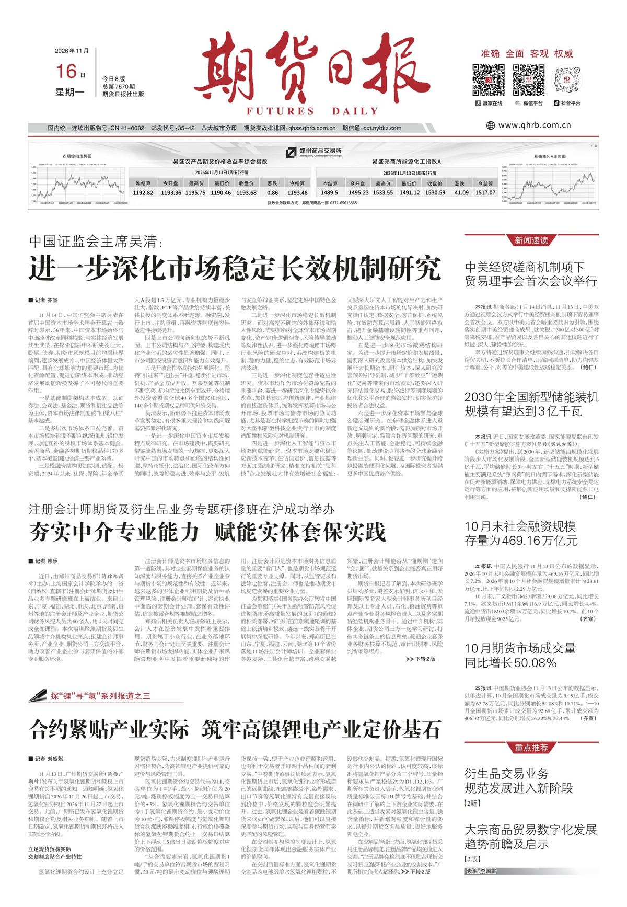
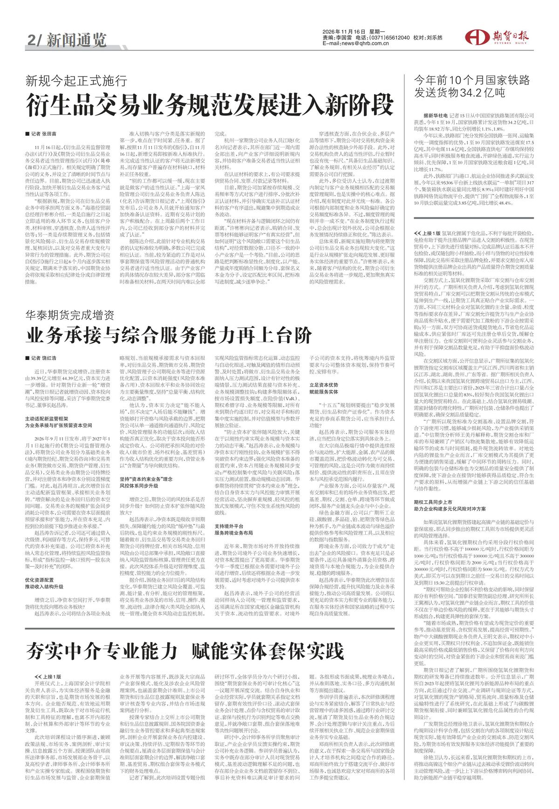
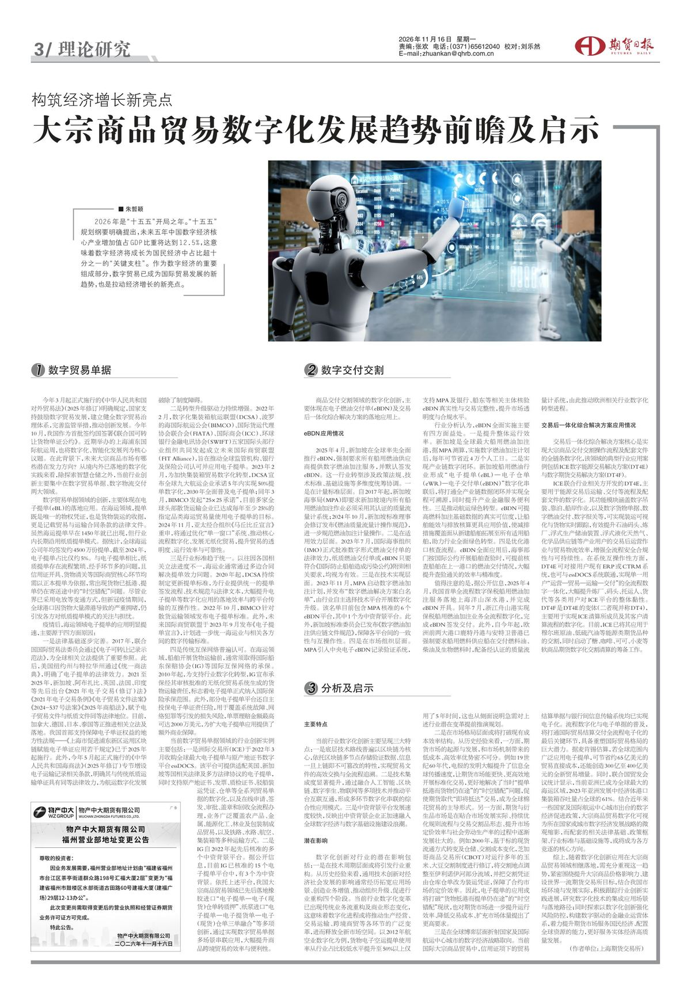
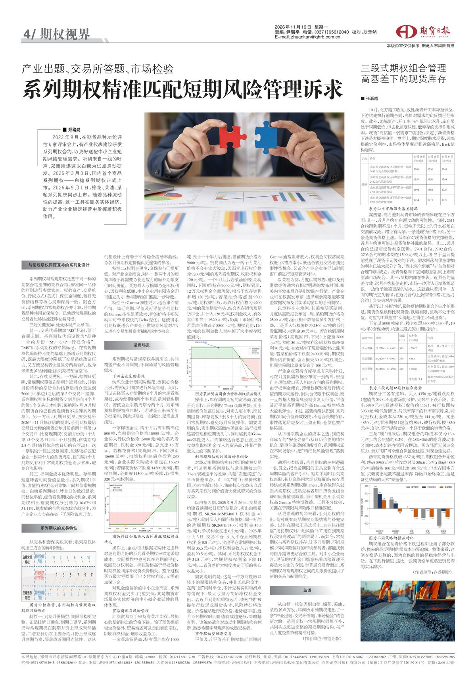
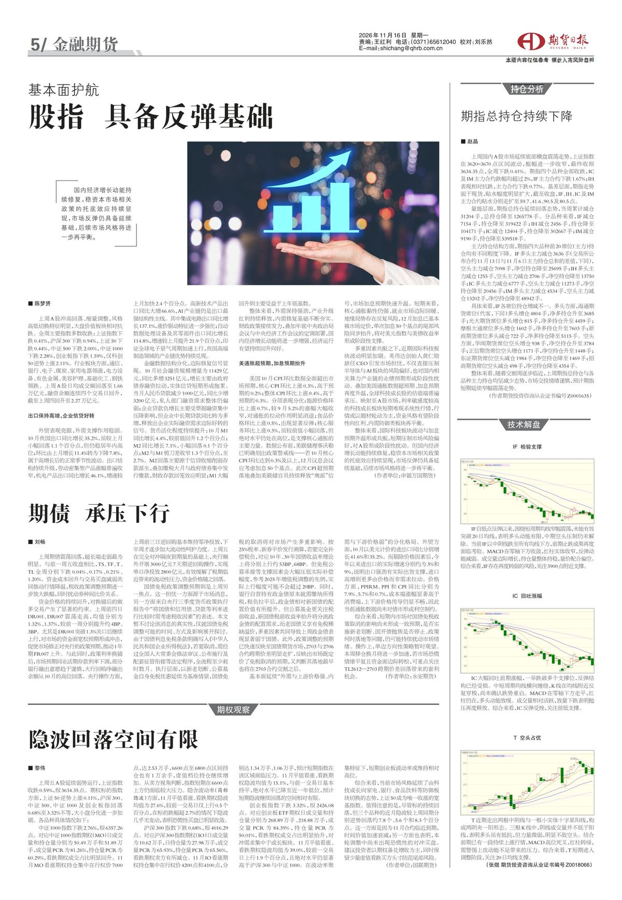
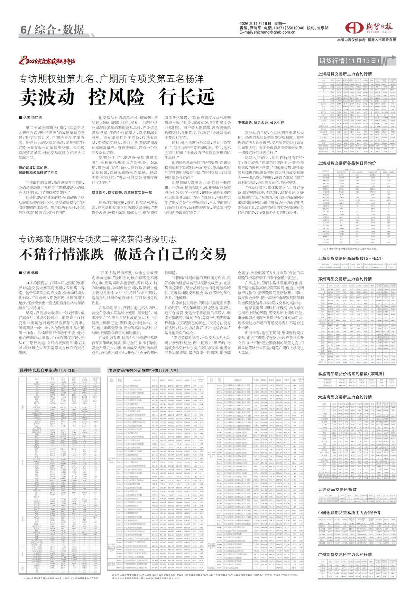
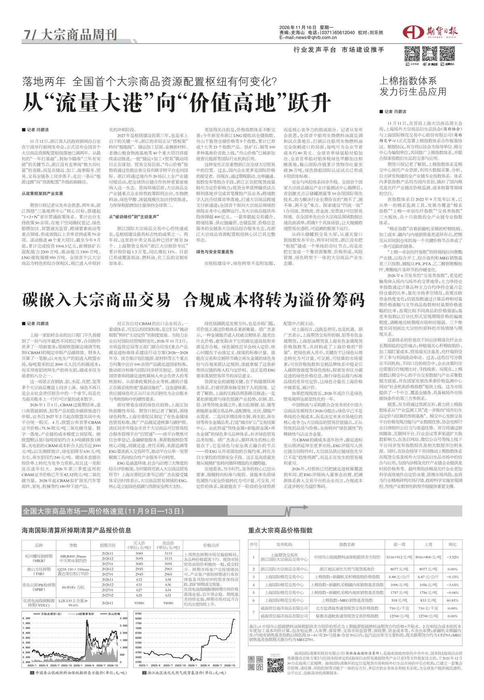
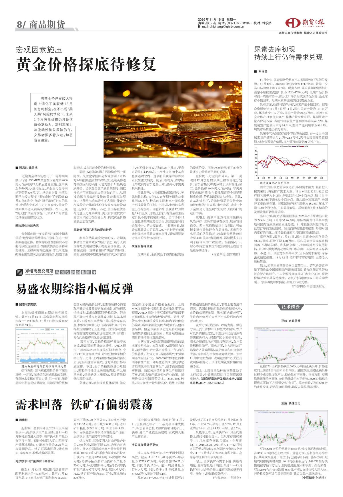

10月期货市场成交量同比增长50.08%
本报讯中国期货业协会11 月13 日公布的数据显示，以单边计算，10 月全国期货市场成交量为9.05 亿手，成交额为67.78 万亿元，同比分别增长50.08%和10.71%。1—10月全国期货市场累计成交量为92.89 亿手，累计成交额为806.32万亿元，同比分别增长26.32%和32.44%。
（齐宣）

本报讯中国期货业协会11 月13 日公布的数据显示，以单边计算，10 月全国期货市场成交量为9.05 亿手，成交额为67.78 万亿元，同比分别增长50.08%和10.71%。1—10月全国期货市场累计成交量为92.89 亿手，累计成交额为806.32万亿元，同比分别增长26.32%和32.44%。
（齐宣）
探“锂”寻“氢”系列报道之三
系列报道之三
11 月13 日，广州期货交易所（简称广期所）发布关于氢氧化锂期货和期权上市交易有关事项的通知。通知明确，氢氧化锂期货自2026 年11 月26 日起上市交易，氢氧化锂期权自2026年11月27日起上市交易。此前，广期所已发布氢氧化锂期货和期权合约及相关业务细则。随着上市日期敲定，氢氧化锂期货和期权即将进入实际运行阶段。
立足现货贸易实际
交割制度贴合产业特性
氢氧化锂期货合约设计上充分立足现货贸易实际，力求制度规则与产业运行习惯相契合，为高镍锂电产业提供可靠的定价与风险管理工具。
氢氧化锂期货合约交易代码为LI，交易单位为1 吨/手，最小变动价位为20元/吨，涨跌停板幅度为上一交易日结算价的± 5%。氢氧化锂期权合约交易单位为1 手氢氧化锂期货合约，最小变动价位为10 元/吨，涨跌停板幅度与氢氧化锂期货合约涨跌停板幅度相同，行权价格覆盖标的氢氧化锂期货合约上一交易日结算价上下浮动1.5倍当日涨跌停板幅度对应的价格范围。
“从合约要素来看，氢氧化锂期货1吨/手的交易单位符合现货市场的贸易习惯，20 元/吨的最小变动价位与碳酸锂期货保持一致，便于产业企业理解和运用，也有利于交易者开展两个品种间的套利交易。”中泰期货董事长周顺远表示，氢氧化锂期货上市后，氢氧化锂行业将形成自己的远期曲线，把高镍渗透率、海外需求、出口节奏等氢氧化锂特有变量直接反映到价格中，价格发现的颗粒度会明显提升。过去，氢氧化锂企业是看着碳酸锂期货来谈如何做套保；以后，他们可以直接深度参与期货市场，实现与自身经营节奏更匹配的风险管理。
在交割制度与风控制度设计上，氢氧化锂期货同样体现出金融服务实体产业的价值取向。
在交割质量标准方面，氢氧化锂期货交割品为电池级单水氢氧化锂粗颗粒，不设替代交割品。据悉，氢氧化锂现行国标是行业内公认的标准，认可度较高，该标准将氢氧化锂产品分为三个牌号，质量指标要求从严至松依次为D1、D2、D3。广期所相关负责人表示，氢氧化锂期货交割质量标准以国标D1 牌号为基础，并结合在调研中了解的上下游企业实际需要，在此基础上适当收紧对氢氧化锂主含量、铁含量指标，并新增对粒度和镍含量的要求，以提升期货交割品质量，更好地服务锂电企业。
在交割品牌设计方面，氢氧化锂期货采用注册品牌制度，注册品牌产品均免检进入交割。
“注册品牌免检制度不仅贴合现货交易习惯，还能降低产业企业的交割成本。”广期所相关负责人解释称，下转2版合约紧贴产业实际筑牢高镍锂电产业定价基石
本报讯中国人民银行11 月13 日公布的数据显示，2026年10月末社会融资规模存量为469.16万亿元，同比增长7.2%。2026年前10个月社会融资规模增量累计为28.61万亿元，比上年同期少2.29万亿元。
10 月末，广义货币（M2）余额359.06 万亿元，同比增长7.1%。狭义货币（M1）余额116.9 万亿元，同比增长4.4%。
流通中货币（M0）余额15万亿元，同比增长10.7%。前10个月净投放现金9023亿元。
（齐宣）
本报讯据商务部11 月14 日消息，11 月13 日，中美双方通过视频会议方式举行中美经贸磋商机制项下贸易理事会首次会议。双方以中美元首会晤重要共识为引领，围绕落实前期中美经贸磋商成果，就关税、“300 亿对300 亿”对等降税安排、农产品贸易以及各自关心的其他议题进行了坦诚、深入、建设性的交流。
双方将通过贸易理事会继续加强沟通，推动解决各自经贸关切，不断拉长合作清单，压缩问题清单，助力构建基于尊重、公平、对等的中美建设性战略稳定关系。（鲍仁）
一是基础制度架构基本成型。以证券法、公司法、基金法、期货和衍生品法等为主体，资本市场法律制度的“四梁八柱”基本建成。
二是多层次市场体系日益完善。资本市场板块建设不断向纵深推进，错位发展、功能互补的股权市场体系基本健全。
涵盖商品、金融各类期货期权品种170 多个，基本覆盖国民经济主要产业领域。
三是投融资结构更加协调、适配。投资端，2024 年以来，社保、保险、年金净买入A 股超1.5 万亿元，专业机构力量稳步壮大，指数、ETF等产品供给持续丰富，长钱长投的制度体系不断完善。融资端，发行上市、并购重组、再融资等制度包容性适应性持续提升。
四是上市公司向新向优态势不断巩固。上市公司结构与产业转型、构建现代化产业体系的适应性显著增强。同时，上市公司回报投资者意识和能力有效提升。
五是开放合作格局持续拓展深化。坚持“引进来”“走出去”并重，稳步推进市场、机构、产品全方位开放。互联互通等机制不断完善，机构持股比例全面放开，合格境外投资者覆盖全球40 多个国家和地区，140多个期货期权品种可供外资交易。
吴清表示，新形势下推进资本市场改革发展稳定，有很多重大理论和实践问题需要抓紧深化研究。
一是进一步深化中国资本市场发展特点规律研究。在市场建设中，既要研究借鉴成熟市场发展的一般规律，更要深入研究中国的市场特点和面临的结构性问题，坚持市场化、法治化、国际化改革方向的同时，统筹好稳与进、效率与公平、发展与安全等辩证关系，坚定走好中国特色金融发展之路。
二是进一步深化市场稳定长效机制研究。面对高度不确定的外部环境和输入性风险，需要加强对全球资本市场周期变化、资产定价逻辑演变、风险传导联动等规律性认识，进一步强化跨境跨市场跨行业风险的研究应对，系统构建稳的机制、稳的力量、稳的生态，有效防范市场异常波动。
三是进一步深化制度包容性适应性研究。资本市场作为市场化资源配置的重要平台，要进一步研究深化投融资综合改革，加快构建适应创新规律、产业规律的直接融资体系，统筹发挥私募市场与公开市场、股票市场与债券市场的协同功能，尤其是要在科学把握节奏的同时加强对大型和新型科技企业发行上市的制度适配性和风险应对机制研究。
四是进一步深化人工智能与资本市场双向赋能研究。资本市场既要积极适应新技术变革，在估值定价、信息披露等方面加强制度研究，精准支持相关“硬科技”企业发展壮大并有效增进社会福祉；
又要深入研究人工智能对生产力和生产关系重塑在资本市场的传导映射，加快研究责任认定、数据安全、客户保护、系统风险，有效防范算法黑箱、人工智能网络攻击、提升金融基础设施韧性等重点问题，推动人工智能安全规范应用。
五是进一步深化市场微观结构研
究。为进一步提升市场定价和发展质量，需要深入研究改善资本供给结构，加快发展壮大长期资本、耐心资本；深入研究改善预期引导机制，减少“羊群效应”“短期化”交易等带来的市场波动；还要深入研究评估量化交易、股份减持等制度规则的优化和公平合理的监管安排，切实保护好投资者合法权益。
六是进一步深化资本市场参与全球金融治理研究。在全球金融体系进入重新定义规则的新阶段，需要加强对市场开放、规则制定、监管合作等问题的研究，重点关注人工智能、金融稳定、可持续金融等议题，推动建设协同共治的全球金融治理新生态。同时，也要进一步研究提升跨境投融资便利化问题，为国际投资者提供更多中国优质资产供给。
近日，由郑州商品交易所（简称郑商所）主办、上海国家会计学院承办的十省（自治区、直辖市）注册会计师期货及衍生品业务专题研修班在上海结业。来自山东、宁夏、福建、湖北、重庆、北京、河南、贵州等地的注册会计师及产业企业、期货公司财务风控人员共60余人，用4天时间完成全部课程。本次培训聚焦期货及衍生品领域中介机构执业痛点，搭建会计师事务所、产业企业、期货公司三方交流平台，助力改善产业企业参与套期保值的外部专业服务环境。
注册会计师是资本市场财务信息的第一道防线，其对企业套期保值业务的认知深度与服务能力，直接关系产业企业参与期货市场的规范性和有效性。近年来，越来越多的实体企业利用期货及衍生品管理风险，注册会计师在审计、咨询执业中面临的套期会计处理、套保有效性评估、信息披露合规等难题随之增多。
郑商所相关负责人在研修班上表示，会计人才在经济发展中发挥着重要作用。期货属于小众行业，在业务落地环节，财务与会计处理至关重要。注册会计师在期货市场发挥功能、实体企业开展风险管理业务中发挥着重要而独特的作用。注册会计师是资本市场财务信息质量的重要“看门人”，也是期货市场规范运行的重要专业支撑。同时，从监管要求和法律定位看，注册会计师也是推动期货市场规范发展的重要专业力量。
为贯彻落实《国务院办公厅转发中国证监会等部门〈关于加强监管防范风险促进期货市场高质量发展的意见〉的通知》的相关部署，郑商所在前期属地轮训的基础上创新培训模式，遴选一线实务骨干开展集中深度研修。今年以来，郑商所已在山东、宁夏、福建、云南、湖北等10 个省份落地11 场注册会计师培训。企业套保业务越复杂、工具组合越丰富、跨境交易越频繁，注册会计师能否从“懂规则”走向“会判断”，就越关系到企业能否真正用好期货市场。
期货日报记者了解到，本次研修班学员结构多元，覆盖安永华明、信永中和、天职国际等多家大型会计师事务所项目经理及以上专业人员，石化、粮油贸易等重点产业企业财务风控负责人，以及多家期货经营机构业务骨干。通过中介机构、实体企业、期货公司三方一起学习研讨，打破实务链条上的信息壁垒，疏通企业套保业务财务核算不规范、审计识别难、风险判断难等堵点。
下转2版
注册会计师期货及衍生品业务专题研修班在沪成功举办夯实中介专业能力赋能实体套保实践
本报讯近日，国家发展改革委、国家能源局联合印发《“十五五”新型储能实施方案》（简称《实施方案》）。
《实施方案》提出，到2030 年，新型储能由规模化发展阶段步入市场化发展阶段，全国新型储能装机规模达到3亿千瓦，平均储能时长3 小时左右。
“十五五”时期，新型储
能主要满足系统“源网荷”侧日内调节需求，深化新型储能在促进新能源消纳、保障电力供应、支撑电力系统安全稳定运行等方面的应用，拓展创新应用场景和支撑新能源非电利用实践。
（鲍仁）

近日，华泰期货完成增资，注册资本由39.39亿元增至44.39亿元，资本实力进一步增强。针对期货行业新一轮“增资潮”，期货日报记者就增资动因、资本投向与风控安排等问题，采访了华泰期货党委书记、董事长赵昌涛。
主动适配新监管框架
为业务承接与扩张预留资本空间
2026 年9 月11 日发布、将于2027 年1月1 日起施行的《期货公司监督管理办法》，将期货公司业务划分为基础类业务（境内期货经纪、期货交易咨询）和交易类业务（期货做市交易、期货资产管理、衍生品交易），交易类业务由期货公司持牌经营，并对注册资本和净资本分别设置梯度门槛。对此，赵昌涛坦言，此次增资旨在主动适配新监管框架、承接相关业务划转。
“增资解决的是业务回归后的资本空间问题。交易类业务的规模扩张会同步消耗公司资本，公司需要在资本层面提前预留承接和扩张能力，并在资本充足、内控到位的前提下稳步推进业务承接。”赵昌涛告诉记者，公司还可通过借入次级债、利润留存等方式，保持多元、可替代的资本补充渠道。公司已将资本补充纳入常态化管理，将持续监控风险监管指标，形成“指标监控—缺口预判—股东决策—及时补充”的闭环。
优化资源配置
推动收入结构升级
增资之后，净资本空间打开，华泰期货将优先投向哪些业务板块？
赵昌涛表示，公司将结合各项业务战略规划、当前规模承接需求与资本回报率，对衍生品交易、期货做市交易、期货资管、风险管理子公司期现业务等进行资源优化配置，以资本消耗强度（风险资本准备占用）、资本回报水平和业务协同效应为主要衡量维度，坚持“总量平衡、结构优化、动态调整”。
他认为，资本实力决定“能不能入场”，但不决定“入场后能不能赚钱”。增资能够打开资格与风险承载的边界，把期货公司从单一通道推向通道执行、风险定价、风险管理服务的功能层次；而收入结构能否真正优化，取决于资本投向能否形成定价收入。公司将把承担风险的对价收入（做市价差、场外权利金、基差贸易）作为收入结构优化的重要方向，资管业务以“含期量”为导向做优结构。
坚持“资本约束业务”理念
风控体系同步升级
增资之后，期货公司的风控体系是否同步升级？如何防止资本扩张伴随风险放大？
赵昌涛表示，净资本既是吸收非预期损失、保障履约能力的风险“缓冲垫”与最后防线，也是约束业务规模的刚性标尺。
随着做市、衍生品交易等交易类业务回归期货公司持牌经营，相关市场风险、信用风险由公司总部集中承担，风险敞口直接纳入风险监管指标核算，管理责任更为直接。此次风控体系升级是对管理维度、监控精度、管控能力的全方位提升。
据介绍，围绕业务回归后的风险结构变化，华泰期货已建立风险全覆盖、可监测、能计量、有分析、能应对的管理框架，将交易类业务涉及的市场、信用、操作、模型、流动性、法律合规六类风险全部纳入统一管理；健全资本风险动态监控机制，实现风险监管指标常态化运算、动态监控与自动化报送，对触及阈值的情形自动预警、及时处置；将做市、衍生品交易业务全面纳入压力测试范围，设计有针对性的极端情景，压力测试结果直接与资本补充、业务规模调整挂钩；构建多维限额体系，按市场设置损失额度、在险价值（VaR）、期权希腊字母、业务规模等限额，对所有未到期合约逐日盯市，对交易对手和标的集中度实施控制，并对估值模型与参数开展独立验证。
“防止资本扩张伴随风险放大，关键在于以刚性约束实现业务规模与资本实力的动态平衡。”赵昌涛表示，业务规模与净资本实行刚性挂钩，业务规模扩张不得突破资本约束边界；强化风险资本准备的前置约束，资本占用随业务规模同步变动；严格控制集中度风险与关联风险；落实压力测试前置，推动规模动态回调。华泰期货将持续贯彻“资本约束业务”理念，结合自身资本实力与风控能力审慎开展经营活动，坚决摒弃重规模、轻风控的粗放式发展模式，守住不发生系统性风险的底线。
支持境外平台
服务跨境业务布局
近年来，期货市场对外开放持续推进，期货公司境外子公司业务快速增长，对资本配置提出了更高要求。华泰期货今年一季度已根据业务需要对境外子公司进行增资，后续还将根据业务进一步发展需要，适时考虑对境外子公司提供资本支持。
赵昌涛表示，境外子公司的经营活动同样纳入公司统一管理和监管要求，还须满足所在国家或地区金融监管机构关于资本、流动性的监管要求。对境外子公司的资本支持，将统筹境内外监管要求与公司整体资本规划，保持节奏可控、安排有序。
立足资本优势
赋能服务实体
“十五五”规划纲要提出“稳步发展期货、衍生品和资产证券化”。作为资本充足的券商系期货公司，应当承担什么功能？
赵昌涛表示，期货公司服务实体经济，应当把自身定位落实到具体业务上。
在大宗商品极端行情中提供连续报价与流动性，扩大能源、金属、农产品的做市覆盖范围，把价格波动转化为可交易、可管理的风险，这是公司作为做市商持续报价、提供流动性的职责所在，且须在资本与风控承受范围内履行。
产业服务方面，公司从存量客户、现有交割库和已有的场外业务资格出发，把基差、期权、交割、仓单、跨境等环节做成闭环，服务产业链龙头企业与中小企业。
绿色金融方面，公司以广期所工业硅、碳酸锂、多晶硅、铂、钯期货等绿色品种为抓手，为产业链成本波动与绿色溢价提供价格参考和风险管理工具，以及相应的数据与指数服务。
跨境业务方面，公司致力于成为“走出去”企业的风险接口。资本充足只是必要条件，还应具备境外清算会员资格、跨境资质与本地合规能力，为企业提供合规、稳健的跨境服务。
赵昌涛表示，华泰期货此次增资旨在保障合规经营，提升抗风险能力及业务承接能力，推动公司高质量发展。公司将以更充足的资本实力和更专业的服务能力，在服务实体经济和国家战略的过程中实现自身高质量发展。
华泰期货完成增资
业务承接与综合服务能力再上台阶
“根据新规，期货公司在衍生品交易业务中将承担两方面义务。”海港经贸副总经理许彬彬介绍，一类是自施行之日起立即适用的准入环节义务，包括客户分类、材料审核、穿透核查、负责人适当性评估等；另一类是存续期管理义务，包括情景化风险揭示、衍生品交易存续规模管理、复核回访，以及对交易者重大变化与异常行为的管理措施。此外，期货公司应自《指引》施行之日起6个月内逐步落实相关规定，期满未予落实的，中国期货业协会将依规采取相应纪律处分或自律管理措施。
准入切换与客户分类是落实新规的第一步，难点在于时间紧、任务重。据了解，按照11月11日发布的《指引》，自11月16 日起，新增交易即按新准入标准执行。
未完成适当性认证的客户将无法新增交易，而存量客户普遍存在材料缺口，材料补正任务较重。
“别的工作都可以缓一缓，现在主要就是做客户的适当性认证。”上海一家风险管理公司衍生品交易业务负责人陈达（化名）告诉期货日报记者，“上周《指引》发布后，公司业务人员就开始通知客户加快准备认证资料。近期有交易计划的客户积极配合。在上周最后两个工作日内，公司已经收到部分客户的材料并完成了认证。”据陈达介绍，此前针对专业机构交易者的认定标准较为明确，多数公司已完成相应认证。当前，较为紧迫的工作是对从事套期保值等风险管理活动的普通机构交易者进行适当性认证。由于产业客户的具体情况存在较大差异，部分客户需临时准备相关材料，在两天时间内难以全部完成。
杭州一家期货公司业务人员江晓（化名）向记者表示，其所在部门近一周内需全部出差，向产业客户详细说明新规内容，并协助客户准备交易者适当性认证相关材料。
在认证材料的要求上，有公司要求提供贸易合同、发票、付款记录等材料。
目前，期货公司加紧按存续规模、交易频率等方式对客户进行排序，分批次补正认证材料，并引导确实无法补正认证材料的客户有序退出，规避集中到期造成业务波动。
“现在材料齐备与逻辑闭环之间仍有距离。”许彬彬向记者表示，购销合同、发票等材料能够证明客户“有真实经营”，但如何证明“这个风险敞口需要这个衍生品结构”，对经营数据分散、口径不一致的中小产业客户是一个考验。
“目前，公司的思
路是把判断标准显性化、制度化，以产能、产量或年度购销合同额为分母、套保名义本金为分子，设定匹配比率区间，把标准写进制度，减少逐单争论。”穿透核查方面，在合伙企业、多层产品等情形下，期货公司对交易机构资金来源合法性的核查缺少外部手段。此外，对交易机构负责人的适当性评估，行业暂时也没有统一标尺。
“具备衍生品基础知识、
了解业务规则、有相关从业经历”的认定需要各公司自行把握。
此外，多位受访人士认为，在过渡期内制定与客户业务规模相匹配的交易额度管理规则，也是实操中的核心难点。据介绍，现有制度对此并无统一标准。各公司根据内部制度和业务风险偏好确定的交易额度标准各异。不过，额度管理的规则并非一成不变。
“在业务制度执行过程
中，总会出现计划外状况，公司会根据业务发展情况持续修正和优化。”陈达表示。
总体来看，新规实施短期内将使期货公司衍生品交易业务出现较大变化。
“这
是行业从规模扩张走向规范发展、更好服务实体经济的重要节点。”许彬彬表示，未来，随着客户结构的优化，期货公司衍生品交易业务将进一步规范，更加聚焦真实的风险管理需求。
据新华社电记者15日从中国国家铁路集团有限公司获悉，今年1至10月，国家铁路累计发送货物34.2亿吨，日均装车18.92万车，同比分别增长1.1%、1.8%。
今年以来，铁路部门充分发挥全国铁路一张网、运输集中统一调度指挥的优势，1 至10 月国家铁路发送煤炭17.5亿吨，其中电煤11.6亿吨，全国铁路直供电厂存煤均保持较高水平；同时积极服务粮食流通，开辟绿色通道，实行运力倾斜、优先保障，1 至10 月国家铁路发送粮食超1 亿吨，同比增长11.7%。
此外，铁路部门与港口、航运企业协同推进多式联运发展，今年以来95306平台新上线铁水联运“一单制”项目317个，集装箱铁水联运量同比增长8.9%；同时建好用好中国铁路网络货运物流平台，提供“门到门”全程物流服务，1至10月铁公联运量完成3.85亿吨，同比增长48.4%。

“十五五”
规划纲要明确提出，未来五年中国数字经济核心产业增加值占GDP比重将达到12.5%，这意味着数字经济将成长为国民经济中占比超十分之一的“关键支柱”。作为数字经济的重要组成部分，数字贸易已成为国际贸易发展的新趋势，也是拉动经济增长的新亮点。
■朱哲颖
今年3月起正式施行的《中华人民共和国对外贸易法》（2025年修订）明确规定，国家支持鼓励数字贸易发展，建立健全数字贸易治理体系，完善监管举措，推动创新发展。今年10月，我国作为首批签约国签署《联合国可转让货物单证公约》。近期举办的上海浦东国际航运周，也将数字化、智能化发展列为核心议题。在此背景下，未来大宗商品市场有哪些潜在发力方向？从境内外已落地的数字化实践来看，除探索智慧仓储之外，当前行业创新主要集中在数字贸易单据、数字物流交付两大领域。
数字贸易单据领域的创新，主要体现在电子提单（eBL）的落地应用。在海运领域，提单既是唯一的物权凭证，也是货物装运的收据，更是记载贸易与运输合同条款的法律文件。
虽然海运提单早在1450 年就已出现，但行业内长期沿用纸质提单模式。据统计，全球海运公司年均签发约4500万份提单，截至2024年，电子提单占比仅约5%。与电子提单相比，纸质提单存在流程繁琐、经手环节多的问题，且信用证开具、货物清关等国际商贸核心环节均需以正本提单为依据，常出现货物已抵港、提单仍在寄送途中的“时空错配”问题。尽管业界已采用电放等变通方式，但新冠疫情期间，全球港口因货物大量滞港导致的严重拥堵，仍引发各方对纸质提单模式的关注与担忧。
疫情后，海运领域电子提单的应用明显提速，主要源于四方面原因：一是法律基础逐步完善。2017 年，联合国国际贸易法委员会通过《电子可转让记录示范法》，为全球相关立法提供了重要参照。此后，美国纽约州与特拉华州通过《统一商法典》，明确了电子提单的法律效力。2021 至2025 年，新加坡、阿布扎比、英国、法国、印度等先后出台《2021 年电子交易（修订）法》《2021年电子交易条例》《电子贸易文件法案》《2024-537 号法案》《2025 年商船法》，赋予电子贸易文件与纸质文件同等法律地位。目前，加拿大、德国、日本、泰国等正推进相关立法及落地。我国首部支持保障电子单证权益的地方性法规——《上海市促进浦东新区运用区块链赋能电子单证应用若干规定》已于2025 年起施行。此外，今年5 月起正式施行的《中华人民共和国海商法》（2025 年修订）专节增设电子运输记录相关条款，明确其与传统纸质运输单证具有同等法律效力，为航运数字化发展破除了制度障碍。
二是转型升级驱动力持续增强。2022 年2 月，数字化集装箱航运联盟（DCSA）、波罗的海国际航运公会（BIMCO）、国际货运代理协会联合会（FIATA）、国际商会（ICC）、环球银行金融电讯协会（SWIFT）五家国际头部行业组织共同发起成立未来国际商贸联盟（FIT Alliance），旨在推动全球监管机构、银行及保险公司认可并应用电子提单。2023 年2月，为加快集装箱贸易数字化转型，DCSA 宣布全球九大航运企业承诺5 年内实现50%提单数字化，2030 年全面普及电子提单；同年3月，BIMCO 发起“25× 25 承诺”，目前多家全球头部散货运输企业已达成每年至少25%的指定品类海运贸易量使用电子提单的目标。
2024 年11 月，亚太经合组织《马丘比丘宣言》重申，将通过优化“单一窗口”系统、推动核心流程数字化、发展无纸化贸易，提升贸易的透明度、运行效率与可靠性。
三是行业标准趋于统一。以往因各国相关立法进度不一，海运业通常通过多边合同解决提单效力问题。2020 年起，DCSA 持续制定更新提单标准，为行业提供统一的提单签发流程、技术规范与法律文本，大幅提升电子提单等数字化应用的落地效率与跨平台传输的互操作性。2022 年10 月，BIMCO 针对散货运输领域发布电子提单标准。此外，未来国际商贸联盟于2023 年9 月发布《电子提单宣言》，计划进一步统一海运业与相关各方间的数字传输标准。
四是传统互保网络普遍认可。在海运领域，船舶开展货物运输前，通常须取得国际船东保赔协会（IG）等国际互保网络的承保。
2010年起，为支持行业数字化转型，IG宣布承保经其审核批准的无纸化贸易系统生成的货物运输责任，标志着电子提单正式纳入国际保险承保范围。此外，部分电子提单平台还自主投保电子单证责任险，用于覆盖系统故障、网络犯罪等引发的损失风险，单票理赔金额最高可达2000万美元，为扩大电子提单应用提供了额外商业保障。
当前数字贸易单据领域的行业创新实例主要包括：一是洲际交易所（ICE）于2022 年3月收购全球最大电子提单与原产地证书数字平台essDOCS。该平台可提供适配英国、新加坡等国相关法律及多方法律协议的电子提单，同时支持原产地证书、发票、质检证书、驳船装运凭证、仓单等全系列贸易单据的数字化，以及在线申请、签发、审批、盖章和回收全流程办理，业务广泛覆盖农产品、金属、能源化工、林业及包装制成品贸易，以及铁路、水路、航空、集装箱等多种运输方式。二是IG 自2022 年起先后核准的多个中资背景平台。据公开信息，目前IG 已核准的15 个电子提单平台中，有3 个为中资背景。依托上述平台，我国大宗商品贸易领域已先后落地橡胶进口“电子提单—电子（现货）仓单转质押”、纸浆进口“电子提单—电子提货单—电子（现货）仓单三单融合”等多项创新，通过实现数字贸易单据多场景串联应用，大幅提升商品跨境贸易的效率与便利性。
数字贸易单据
数字贸易单据
1
数字交付交割
数字交付交割
2
商品交付交割领域的数字化创新，主要体现在电子燃油交付单（eBDN）及交易后一体化综合解决方案的落地应用上。
eBDN应用情况
2025 年4 月，新加坡在全球率先全面推行eBDN，强制要求所有船用燃油供应商提供数字燃油加注服务，并默认签发eBDN。这一行业转型涉及政策法规、技术标准、基础设施等多维度统筹协调。一是在计量标准层面。自2017年起，新加坡海事局（MPA）即要求新加坡境内所有船用燃油加注作业必须采用其认证的质量流量计系统；2024 年10 月，新加坡标准理事会修订发布《燃油质量流量计操作规范》，进一步规范燃油加注计量操作。二是在适用效力层面。2023 年7 月，国际海事组织（IMO）正式批准数字形式燃油交付单的法律效力，纸质燃油交付单或eBDN 只要符合《国际防止船舶造成污染公约》附则相关要求，均视为有效。三是在技术实现层面。2023 年11 月，MPA 启动数字燃油加注计划，并发布“数字燃油解决方案白名单”，由行业自主选择技术平台开展数字化升级。该名单目前包含MPA 核准的6 个eBDN平台，其中1个为中资背景平台。此外，新加坡标准委员会已发布《数字燃油加注供应链文件规范》，保障各平台间的一致性与互操作性。四是在市场组织层面。
MPA引入中央电子eBDN记录验证系统，支持MPA 及银行、船东等相关主体核验eBDN 真实性与交易完整性，提升市场透明度与合规水平。
行业分析认为，eBDN 全面实施主要有四方面益处。一是提升整体运行效率。新加坡是全球最大船用燃油加注港，据MPA 测算，实施数字燃油加注计划后，每年可节省近4 万个人工日。二是实现产业链数字闭环。新加坡船用燃油行业形成“ 电子提单（eBL）— 电子仓单（eWR）—电子交付单（eBDN）”数字化串联后，将打通全产业链数据闭环并实现全程可溯源，同时提升产业金融服务便利性。三是推动航运绿色转型。eBDN可提高燃料加注基础数据的真实可信度，让船舶能效与排放核算更具应用价值，使减排措施覆盖面从新建船舶拓展至所有适用船舶，助力行业全面绿色转型。四是优化港口核查流程。eBDN 全面应用后，海事部门按国际公约开展船舶查验时，可提前核查船舶在上一港口的燃油交付情况，大幅提升查验通关的效率与精准度。
值得注意的是，据公开信息，2025年4月，我国首单全流程数字保税船用燃油加注服务落地上海洋山深水港，并完成eBDN 开具。同年7 月，浙江舟山港实现保税船用燃油加注业务全流程数字化，完成eBDN 签发交付。此外，自今年起，欧洲前两大港口鹿特丹港与安特卫普港已强制要求船用燃料供应船在交付燃料油、柴油及生物燃料时，配备经认证的质量流量计系统，由此推动欧洲相关行业数字化转型进程。
交易后一体化综合解决方案应用情况交易后一体化综合解决方案核心是实现大宗商品交付交割操作流程及配套文件的全链条数字化，该领域的典型行业应用案例包括ICE数字能源交易解决方案（DT4E）与数字期货交易解决方案（DT4F）。
ICE联合行业相关方开发的DT4E，主要用于能源交易后运输、交付等流程及配套文件的数字化。其功能模块涵盖数字吊装、靠泊、船岸作业，以及数字货物单据、数字燃油交付、数字报关等，可实现装运可视化与货物实时跟踪，有效提升石油码头、炼厂、浮式生产储油装置、浮式液化天然气、化学品供应链等产业用户的交易后运营作业与贸易物流效率，增强全流程安全合规性与可持续性。在系统互操作性方面，DT4E 可对接用户现有ERP 或CTRM 系统，也可与essDOCS系统联通，实现单一用户“运营—贸易—运输—交付”的全流程数字一体化，大幅提升炼厂、码头、托运人、货代等各类用户对ICE 平台的整体黏性。
DT4F是DT4E的变体（二者现并称DT4），主要用于实现ICE清算所成员及其客户清算流程的数字化。目前，ICE已将其应用于穆尔班原油、低硫汽油等能源类期货品种的交割，同时启动了糖、咖啡、可可、小麦等软商品期货数字化交割清算的筹备工作。
主要特点
当前行业数字化创新主要呈现三大特点：一是底层技术路线普遍以区块链为核心，依托区块链多节点存储验证数据、信息一旦上链即不可篡改的特性，实现贸易文件的高效交换与全流程追溯。二是技术集成度显著提升，通过融合人工智能、区块链、数字孪生、物联网等多项技术并推动平台互联互通，形成多环节数字化串联的综合性应用模式。三是中资背景平台发展速度较快，反映出中资背景企业正加速融入全球数字经济与数字基础设施建设浪潮。
潜在影响
数字化创新对行业的潜在影响包
括：一是在技术周期层面或将引发行业重构。从历史经验来看，通用技术创新对经济社会发展的影响通常经历拓宽应用场景、创造业务增值、推动组织升级、促进行业重构四个阶段。当前行业数字化变革已出现传统业务流重构及商业形态变化，这意味着数字化进程或将推动生产经营、交易运输、跨境商贸等各环节的广泛变革，进而释放全新市场空间。以2012年航空业数字化为例，货物电子空运提单使用率从行业占比较低水平提升至50%以上仅用了5 年时间，这也从侧面说明急需对上述行业潜在变革提前推演规划。
二是在市场格局层面或将打破现有成本效率结构。从历史经验来看，一方面，期货市场的起源与发展，和市场机制带来的低成本、高效率优势密不可分。例如19世纪60年代，电报的发明大幅提升了信息全球传播速度，让期货市场能更快、更高效地开展标准化交易，更好地解决了当时“提单抵港而货物仍在途”的“时空错配”问题，促使期货取代“即将抵达”交易，成为全球棉花贸易的主导形式。另一方面，期货与衍生品市场是在贴合市场发展实际、持续优化规则流程与交易交割品形态、提升市场定价效率与社会劳动生产率的过程中逐渐发展壮大的。例如2000年，基于标的现货流通方式转变及仓储、交割成本变化，芝加哥商品交易所（CBOT）对运行多年的玉米、大豆交割制度进行修订，将交割地点调整至伊利诺伊河部分流域，并把交割凭证由仓库仓单改为装运凭证，保障了合约市场的定价效率。因此，电子提单的应用或将打破“货物抵港而提单仍在途”的“时空错配”现状，也对期货市场进一步提升运行效率、降低交易成本、扩充市场体量提出了更高要求。
三是在全球博弈层面折射国家及国际航运中心城市的数字经济战略取向。当前国际大宗商品贸易中，信用证项下的贸易结算单据与银行间信息传输系统均已实现电子化。流程数字化与电子单据的普及，将打通国际贸易结算交付全流程电子化的最后关键环节，具备重塑国际贸易格局的巨大潜力。据麦肯锡估算，若全球范围内广泛应用电子提单，可节省约65亿美元的贸易直接成本，还能创造300亿至400亿美元的全新贸易增量。同时，联合国贸发会议统计显示，当前亚洲已成为全球最大的海运区域，2023 年亚洲发展中经济体港口集装箱吞吐量占全球的61%。结合近年来一些国家及国际航运中心城市出台的数字经济促进政策，大宗商品贸易数字化可视为所在国家或城市数字经济发展战略的微观缩影，而配套的相关法律基础、政策框架、行业标准与基础设施等，或将成为各方竞逐的核心方向。
综上，随着数字化创新应用在大宗商品贸易领域相继落地，需充分重视这一趋势，紧密围绕提升大宗商品价格影响力、建设世界一流期货交易所目标，结合我国市场环境与发展实际，积极跟踪行业创新实践进展，研究数字化技术的集成应用场景与落地路径；同时探索以数字化创新强化风险防控，构建数字驱动的金融业运营体系，着力提升期货市场服务国民经济、配置全球资源的能力，更好服务实体经济高质量发展。
（作者单位：上海期货交易所）
分析及启示
分析及启示
3

广州深圳（
）
三段式期权组合管理
高基差下的现货库存
■张淄越
10月，北方施工收尾、改性沥青开工率降至低位、下游优先执行前期合同，高价对需求的负反馈已经形成。此外，地炼复产、开工率与产量环比双升，库存虽处于同期低位，但去化速度放缓，低库存的支撑作用减弱。现货“高估值＋弱需求”的组合，决定了沥青价格下跌是大概率事件。盘面上，期货深度贴水现货，远端提前定价利空，市场整体呈现近强远弱格局，Back 结构加深。
名称
基差
价差
山东重交沥青现货平均价格—沥青2611主力合约收盘价格山东重交沥青现货平均价格—沥青2612合约收盘价格山东重交沥青现货平均价格—沥青2701合约收盘价格山东重交沥青现货平均价格—沥青2702合约收盘价格10月16日（元/吨）120615501692175410月15日（元/吨）125015501665171910月14日（元/吨）1245159417271776表为山东市场沥青基差情况高基差、高月差对沥青市场的影响体现在三个方面：其一，近月合约存在硬收敛的可能性。当时，2611合约距到期不足1 个月，每吨千元以上的升水必须在交割前收敛。路径有两条，一条是现货价格下跌，另一条是期货价格上涨。低库存对现货价格的支撑较强，近月合约更可能走期货价格补涨的路径。其二，远月合约已提前定价利空逻辑。2701 合约、2702 合约、2703 合约的贴水均在1500 元/吨以上，相当于盘面提前兑现了现货千元级别的下跌。需求回落与供应增加的利空已被大部分计价，“尚未完全到底”与“估值相对合理”同时成立。沥青价格向下空间被压缩，向上则需原油市场配合。其三，结构内部在撕裂。近月合约基差收敛、远月合约基差走扩，市场一边承认近端货源紧张，一边给予远端更深的贴水。这就意味着用单一方向的期货空头套保，在近月合约上会锁错价格，在远月合约上会失去对冲效果。
基于以上分析判断，最终落地期权组合的三个前提是：期货价格跌得比现货慢；跌幅有限；波动率处于高位。对应的工具应当“买得起、扛得住、不碍出货”。
下文以5000 吨库存、按70%即3500 吨（350 手，10吨/手）套保为例，构建三段式领口期权组合。
策略方向
买入看跌
卖出看跌
卖出看涨
合计
合约
BU2701-P-4350
BU2701-P-3950
BU2701-C-4850
—
数量
（手）
350
350
350
—
权利金
（元/吨）
-230.2
+86.0
+130.8
净支出13.4
作用
对冲下跌，覆盖下方
风险
压低成本，锁定3950
元/吨低价补库
库存备兑，锁定4850
元/吨销售价格
覆盖70%库存，成本近
乎为零
表为三段式领口期权组合要素
期权分工各有逻辑。买入4350 元/吨看跌期权（虚值约2%），不追求深度保护，只对冲下跌阶段。卖出3950 元/吨看跌期权（虚值约11%），被行权即按3950 元/吨低价接货，与低库存下的补库需求呼应，同时把权利金成本从230 元/吨压至144 元/吨。卖出4850 元/吨看涨期权（虚值约9%），被行权即按4850元/吨交货，等于提前锁定一个好于盘面的销售价格。
三条“腿”相抵后，期权组合的净成本仅为13.4元/吨，约合货值的0.2%。在28%~36%的隐含波动率区间内，成本始终在零附近摆动。买方“腿”无保证金压力，卖方“腿”可享组合保证金优惠，对现金流友好。
沥青期货价格跌破4337元/吨后期权组合开始盈利，跌破3950元/吨后收益封顶386.6元/吨；涨破4850元/吨后每涨100 元/吨让渡100 元/吨，但库存同步升值，只要卖出吨数不超过库存，净敞口始终为正，这是备兑结构的天然“安全垫”。
图为不同策略的损益对比
期权组合在沥青价格下跌过程中让渡了部分收益，换来的是反弹时的零成本与零追保。整体来看，这笔交换是划算的，因为套保的目的是稳住经营与出货。在下跌行情里，这比一张期货空单更贴近贸易商的实际需求。
（作者单位：齐盛期货）
本报地址郑州市郑东新区商都路100 号建正东方中心D 座8 层邮编450000 传真（0371）65613230 广告热线（0371）65612750 发行热线北京天津（010）84448185 13910151609 上海（021）6产业出题、交易所答题、市场检验系列期权精准匹配短期风险管理诉求与常规期权同源互补的系列化设计系列期权与常规期权是基于同一标的期货合约挂牌的期权合约，按照同一品种的原则进行参数管理。标的资产、交易单位、行权方式（美式）、保证金制度、每日无负债结算等核心规则保持一致。限仓方面，系列期权与常规期权合并计算，并与期货品种共用套保额度。已熟悉常规期权的交易者能够快速迁移交易习惯。
三处关键差异，处处体现产业导向。
其一，交易代码增加“MS”标识，便于直观识别。系列期权代码设置为“品种— 合约月份—MS—C/P— 行权价格”，“MS”即系列期权的专属标记。在常规期权代码保持不变的基础上新增系列期权代码，既最大限度地降低了交易系统改造压力，又方便交易者快速区分两类合约，也为未来更多品种推出系列期权预留空间。
其二，存续期更短。一方面，挂牌日更晚，常规期权覆盖连续两个近月合约，其后月份待标的期货合约结算后持仓量达到5000 手（单边）之后的第2 个交易日挂牌，系列期权则在标的期货交割月份前4 个月的第1个交易日才挂牌（菜粕因8月、9月标的期货合约已自然连续暂不挂牌系列期权）。另一方面，到期日更早，按交易所2026 年11 月修订后的规则，系列期权最后交易日为标的期货交割月份前两个月第13个交易日，比常规期权（交割月份前1 个月第13 个交易日）早1 个月到期，存续期约2.5 个月（随具体合约日历略有浮动）。这一期限设计经过反复测算，能够较好匹配企业一到两个月的备货周期，且间隔1个月到期更有利于常规期权持仓逐步累积，避免分流影响。
其三，权利金成本优势明显。存续期短意味着时间价值总量小，系列期权（平值、虚值档）权利金通常低于同档位常规期权。白糖系列期权挂牌首日的数据显示，同档位平值、虚值看涨期权的权利金，系列期权相比常规期权分别低约16.67% 和31.11%，越虚值的合约成本优势越突出，为产业企业实实在在省下了风险管理开支。
系列期权的交易特性
从交易和套保实践来看，系列期权体现出三方面的鲜明特性。
图为白糖期货、系列期权与常规期权到期月份展示特性一：到期月份插空，期限结构更完整。正是挂牌日更晚、到期日更早，系列期权与常规期权在到期月份上形成天然插空，二者互补后在主要合约月份上形成逐月到期节奏，显著改善期限连续性。这从机制设计上有助于平滑隐含波动率曲线，为各月份期权定价提供更连续的参考。
特性二：权利金更少，套保参与门槛更低。对产业企业而言，对冲一到两个月的短期风险不再需要为长达数月的额外期限支付时间价值。买方最大亏损即为全部权利金，因权利金低廉，中小企业用有限资金即可建立头寸，参与套保的门槛进一步降低。
特性三：Gamma弹性更大，适合事件型行情。临近到期，平值及近平值系列期权的Gamma 往往显著放大，标的价格小幅波动即可带来较快的Delta 变化。这使得系列期权既适合产业企业做短期风险对冲，又适合交易型投资者捕捉事件型机会。
适用场景
系列期权与常规期权各展所长，共同覆盖产业不同周期、不同场景的风险管理需求。
下游企业采购套保
纺织企业计划采购棉花，因担心价格上涨，需要运用期权进行风险管理。此时，可以选择买入存续期约5 个月的常规看涨期权，或存续期约两个半月的系列看涨期权。若该企业采购周期为两个月，则系列期权期限精准匹配，而若该企业未来半年分批采购，则常规期权一次锁定，无需逐月滚动。
一家棉纺企业，两个月后需采购棉花500 吨，当前期货价格为15000 元/吨。企业买入行权价格为15000 元/吨的系列看涨期权，权利金320 元/吨，总支出16 万元。若棉花价格（期现回归，下同）涨至15600 元/吨，扣除权利金后净盈利280元/吨，企业实际采购成本锁定在15320元/吨；若棉花价格下跌至14500 元/吨，期权到期，企业按14500 元/吨采购，仅损失320元/吨权利金。
图为棉纺企业买入系列看涨期权损益情况操作上，企业可以根据采购计划选择对应到期月份的系列看涨期权来锁定采购成本。实际操作中也可以在到期前平仓，收回部分权利金。棉花价格高于行权价格时期权盈利弥补现货涨价损失。整个过程买方最大亏损限于已支付权利金，无需追加保证金。
对现金流偏紧的中小企业而言，系列期权权利金更少、门槛更低，其是期货市场服务实体经济向中小微企业延伸的具体体现。
贸易商库存风险管理
油脂贸易商手里持有菜油库存，最担心的是销售之前价格下跌。除了预售提前锁定价格外，贸易商还可以卖出看涨期权，以收取权利金、增厚收益为主。
一家菜油贸易商，持有菜油库存1000吨，预计一个半月后售出，当前期货价格为9000 元/吨。贸易商认为近一两个月菜油价格不会有太大波动，因而卖出行权价格为9200元/吨的系列看涨期权，收取权利金120元/吨。一个半月后，若菜油价格（期现回归，下同）维持在9000 元/吨，期权到期，12 万元权利金全额落袋，相当于库存销售多增120 元/吨；若菜油价格涨至9300元/吨，期权被行权，形成行权价格为9200元/吨的菜油期货空头，结合库存销售及期货平仓，并计入120元/吨权利金收入，有效卖价相当于9320 元/吨，仍高于市场价格；
若菜油价格跌至8800元/吨，期权到期，120元/吨的权利金收入对冲掉了大半库存贬值损失。
图为菜油贸易商卖出看涨期权损益情况操作上，库存周转期短的贸易商，宜选系列期权，系列期权Theta 衰减更快，卖出后时间价值逐日流失，对卖方更有利；而长期囤货、库存要放3 到5 个月的贸易商，宜用常规期权，避免每月反复操作。需要说明的是，卖出期权需缴纳保证金，被行权后还需管理相应期货头寸，同时临到期Gam⁃ma 弹性更大。该策略适合愿意让渡上方收益换取权利金收入的贸易商，并非严格意义上的下跌保护。
利用期限结构的日历价差组合
对波动率期限结构有判断的成熟交易者，可以利用系列期权与常规期权之间Theta衰减速率的差异，构建“卖近买远”的日历价差组合。由于两“腿”行权价格相同，方向性敞口较小，策略核心收益来自近月系列期权时间价值更快衰减带来的价差收益。
以白糖为例，2025年9月26日，交易者构建看跌期权日历价差组合，卖出白糖系列期权SR2601MSP5400（权利金40元/吨），同时买入相同行权价格、同一标的的常规期权SR2601P5400（权利金46.5元/吨），净权利金支出6.5 元/吨。2025 年11 月3 日，交易平仓，买入平仓系列期权（权利金8.5元/吨），卖出平仓常规期权（权利金35.5 元/吨），净权利金收入27 元/吨，盈利20.5元/吨。其间，系列期权权利金下跌31.5 元/吨，常规期权权利金下跌11元/吨，二者价差扩大幅度决定了策略核心收益大小。
需要说明的是，这是一种方向性敞口较小的期限结构交易，并非无风险套利。
在两“腿”同时平仓、不计交易费用和滑点等情况下，最大亏损为初始净权利金支出。若近月到期后单留远月，或短“腿”被提前行权形成期货头寸，风险特征将改变。价格越贴近行权价格、走势越平稳，近月系列期权时间价值衰减越充分，策略越有利。该策略适合对波动率期限结构有判断、熟悉希腊字母规律的成熟交易者。
事件驱动型短期交易
平值及近平值系列期权临近到期时Gamma 通常显著放大，权利金又较常规期权低，试错成本小，既适合普通交易者捕捉事件型机会，又适合产业企业在已知时间窗口前进行短期套保对冲。
以菜粕为例，月度供需报告、进口及到港数据等通常有相对明确的发布时间，相关内容发布后容易引发脉冲行情。产业企业可在数据发布前，选择剩余期限能够覆盖数据发布及后续采购窗口的系列期权。
以饲料企业为例，其菜粕随买随用。
月度供需数据公布前1周，菜粕期货价格为2500元/吨，企业担心数据偏多引发价格上涨，于是买入行权价格为2500元/吨的系列看涨期权，权利金30元/吨。若合约到期时菜粕价格（期现回归，下同）上涨至2600元/吨，扣除30 元/吨权利金后期权端净盈利70元/吨，有效对冲了现货端价格上涨风险；若菜粕价格下跌至2400 元/吨，期权到期无内在价值，企业损失30 元/吨权利金，但现货采购比原来便宜了100元/吨。
产业企业若持有库存或有采购计划，可在月度供需数据公布前一到两周，根据自身风险敞口买入相应方向的系列期权。
由于权利金便宜，即便数据发布后行情未按预期方向运行，损失也仅限于权利金，而一旦数据大幅偏离预期引发大行情，平值及近平值系列期权的高Gamma 特性将放大盈利弹性。不过，需要清醒认识到，系列期权时间价值衰减较快，不适合长期持有，事件落地后应及时止盈止损，仓位也要严格控制。
从下游采购企业的成本之选，到贸易商库存的“安全之垫”；从日历价差的精细组合，到事件驱动的短线博弈，系列期权正在不同场景中，把“精细化风险管理”落到实处。
通观四类场景，系列期权的应用逻辑一以贯之：把合适期限的工具交到有合适周期风险的客户手中。短期采购用系列期权匹配，长期套保用常规期权覆盖；库存周转快就卖系列期权赚Theta，库存放得久就卖常规期权；成熟交易者用日历价差组合赚时间价值衰减差，事件型机会用系列期权高Gamma 特性博收益。工具不分优劣，关键在于期限与风险敞口精准匹配。
从更宏观的视角来看，系列期权的推出，是对现有商品期权期限结构的补充完善。以往在期权工具选择上，企业往往面临“用长期权对冲短风险”和“用临到期期权承担高波动”的两难局面，而如今，常规期权与系列期权并存，让不同周期、不同规模、不同风险偏好的市场参与者，都能找到与自身需求更贴合的工具。对中小企业而言，更低的权利金门槛意味着风险管理不再是大企业的专属；对普通交易者而言，系列期权与常规期权之间的期限价差提供了新的交易与配置维度。
结语
从白糖一枝独秀到白糖、棉花、菜油、菜粕多点齐发，郑商所系列期权走出了一条“产业出题、交易所答题、市场检验”的创新之路。系列期权与常规期权同源互补，共同构成更加完整的期权期限结构，与产业月度经营节奏精准对接。
（作者单位：福能期货）
2022 年9 月，在期货品种功能评估专家评审会上，有产业代表建议研发系列期权合约，以更好适配中小企业短期风险管理需求。听到来自一线的呼声，郑商所迅速以白糖为试点启动研发。2025 年3 月3 日，国内首个商品系列期权——白糖系列期权正式上市。2026 年9 月1 日，棉花、菜油、菜粕系列期权同步上市。随着品种流动性的提高，这一工具在服务实体经济、助力产业企业稳定经营中发挥着积极作用。
■郑晓艳

期权观察
隐波回落空间有限
■黎伟
上周五A股延续弱势运行，上证指数收跌0.59%，报3634.35点。期权标的指数方面，上证50 逆势上涨0.11%，沪深300、中证500、中证1000 及创业板指回落0.68%至3.32%不等，大小盘分化进一步加剧。各品种具体情况如下：中证1000指数下跌2.76%，报6357.26点。对应中证1000指数期权（MO）日成交量和持仓量分别为50.49 万手和51.89 万手，成交量PCR为81.26%，持仓量PCR为60.29%，看跌期权成交占比明显回升。11月MO 看涨期权持仓集中在行权价7000点，达2.53 万手，6600 点至6800 点区间持仓也有1 万余手，虚值档位持仓继续增加。从卖方视角判断，指数短期在6600点上方仍面临较大压力。隐含波动率（简称隐波）方面，11月平值看涨、看跌期权隐波均值为27.6%，较前一交易日仅上行0.5个百分点，在标的跌幅超2.7%的情况下隐波几乎无变动，表明恐慌性买盘已明显收敛。
沪深300 指数下跌0.68%，报4016.29点。对应沪深300指数期权（IO）日成交量为10.62万手，日持仓量为27.98万手，成交量PCR为65.93%，持仓量PCR为65.56%，看跌期权卖方有所减仓。11月IO看涨期权持仓集中在行权价4200点和4100点，分别达1.34万手、1.06万手，预计短期指数在该区域面临压力。11月平值看涨、看跌期权隐波均值为15.1%，与前一交易日基本持平，绝对水平已降至近一年低位，预计短期隐波继续回落的空间相对有限。
创业板指数下跌3.32%，报2426.08点。对应创业板ETF 期权日成交量和持仓量分别为268.89 万手、218.88 万手，成交量PCR 为84.39% ，持仓量PCR 为50.01%，看跌期权成交占比明显抬升，对冲需求集中于成长板块。11月平值看涨、看跌期权隐波均值为39.0%，较前一交易日上行1.9 个百分点，且绝对水平仍显著高于沪深300 与中证1000。在波动率聚集特征下，短期创业板波动率或维持相对高位。
综合来看，当前市场风格延续了由科技成长向家电、银行、食品饮料等防御板块切换的态势，上证50成为唯一收涨的宽基指数。值得注意的是，尽管标的持续回落，但三个品种的近月隐波较上周同期分别逆势回落约7.8 个、5.6 个和8.3 个百分点。这一方面是因为11月合约临近到期，时间价值加速衰减；另一方面也表明，本轮调整中尚未出现恐慌性的对冲买盘。
建议投资者以期权备兑增收为主，同时保留少量虚值看跌买方头寸防范尾部风险。
（作者单位：国联期货）
■刘畅
上周期债震荡回落，超长端走弱最为明显。与前一周五收盘相比，TS、TF、T、TL 全周分别下跌0.04%、0.17%、0.21%、1.20%。资金成本回升与交易买盘减弱共同推动行情降温，税收政策调整预期进一步放大跌幅，同时扰动券种间比价关系。
资金价格的持续回升，对换锚后的做多交易产生了显著的约束。上周前四日DR001、DR007 震荡走高，均值分别为1.32%、1.37%，较前一周分别提升约4BP、3BP。尤其是DR001突破1.3%关口后继续上行，对市场的资金面宽松预期形成冲击，促使市场修正对央行的政策预期，推动1年期FR007上升。与此同时，政策利率换锚后，市场预期同业活期存款利率下调，部分银行融出意愿趋于谨慎，大行回购净融出余额从10月的高位回落。央行操作方面，上周前三日逆回购基本维持零净投放，下半周才逐步加大流动性呵护力度。上周五在完全对冲隔夜到期量的基础上，央行额外开展3000亿元7天期逆回购操作，实现单日净投放2800亿元，有效缓解了税期临近带来的流动性压力，资金价格随之回落。
国债免税政策调整预期则是上周另一焦点。这一担忧一方面源于市场消息，另一方面来自央行三季度货币政策执行报告中“将国债和信用债、贷款等利率进行比较时需考虑税收因素”的表述。本文暂不讨论该消息的真实性，仅就国债免税调整可能的时间、方式及影响展开探讨。
由于国债利息免税条款明确写入《中华人民共和国企业所得税法》，若要取消，需经过全国人大常委会修法审议、公布施行及配套征管衔接等法定程序，全流程至少耗时数月。执行层面，以新老划断、公募基金自身免税优惠延续为基准情景，国债免税的取消将对市场产生多重影响。按25%税率、新券平价发行测算，若要完全补偿税负，对应10年、30年国债收益率理论上将分别上行约53BP、68BP。但免税公募承接等支撑因素会大幅压低实际补偿幅度，参考2025 年增值税调整的先例，实际上行幅度可能不会超过20BP。同时，银行自营持有政金债原本就需缴纳所得税，税负拉平后，政金债相对新国债的配置价值有所提升。但公募基金更关注税前收益，新国债税前收益率抬升将分流政金债的配置需求，而老国债又享有免税稀缺溢价，多重因素共同导致上周政金债表现显著弱于国债。此外，政策调整的预期已快速反映至国债期货市场，2703与2706合约跨期价差明显走扩，反映出市场既定价了免税取消的预期，又判断其落地最早也将在2703合约交割之后。
基本面延续“外需与上游价格强、内需与下游价格弱”的分化格局。外贸方面，10月以美元计价的进出口同比分别增长41.6%和35.2%。而剔除价格因素后，今年以来进出口的实际增速分别约为3%和9%，说明出口强劲有实际出货支撑，进口高增则更多由价格而非需求拉动。价格方面，PPIRM、PPI 和CPI 同比分别为7.9%、5.7%和0.7%，成本端涨幅显著高于消费端，上下游价格传导仍显不畅，因此当前通胀数据尚未对债市形成利空制约。
综合来看，短期内市场对国债免税政策取消的影响尚未形成一致预期，是否实施新老划断、国开债抛售是否停止、政策何时落地等问题，仍可能持续扰动市场情绪。操作上，单边方向性策略暂时观望。
本周移仓换月将进一步加速，若市场恐慌情绪平复且资金面边际转松，可重点关注TL2612—2703 跨期价差回落带来的套利机会。
（作者单位：永安期货）
持仓分析
期指总持仓持续下降
■赵晶
上周国内A 股市场延续底部横盘震荡走势，上证指数在3620~3670 点区间波动，振幅进一步收窄，最终收报3634.35 点，全周下跌0.41%。期指四个品种全部收跌，IC及IM主力合约跌幅均超过2%，IF主力合约下跌1.67%；IH表现相对抗跌，主力合约下跌0.77%。基差层面，期指走势弱于现货，贴水幅度明显扩大，截至收盘，IF、IH、IC 及IM主力合约贴水分别走扩至59.7、41.6、90.5及80.5点。
量能层面，期指总持仓延续回落态势，当周累计减仓31204 手，总持仓降至1265778 手。分品种来看，IF 减仓7154 手，持仓降至319422 手；IH 减仓2456 手，持仓降至104171 手；IC 减仓12404 手，持仓降至302667 手；IM 减仓9190手，持仓降至539518手。
主力持仓结构方面，期指四大品种前20席位（主力）持仓均有不同程度下降。IF多头主力减仓3636手（交易所公布合约11月13日与11月6日主力持仓总和的差值，下同），空头主力减仓7098 手，净空持仓降至25695 手；IH 多头主力减仓1255手，空头主力减仓2706手，净空持仓降至13750手；IC多头主力减仓6777手，空头主力减仓11273手，净空持仓降至20456 手；IM 多头主力减仓4534 手，空头主力减仓13202手，净空持仓降至48942手。
具体来看，IF各席位持仓增减不一。多头方面，海通期货席位（代客，下同）多头增仓4804 手，净多持仓升至3685手；光大期货席位多头增仓815手，净多持仓升至4459手；
摩根大通席位多头增仓1602 手，净多持仓升至7603 手；浙商期货席位多头减仓722 手，净多持仓降至5115 手。空头方面，华闻期货席位空头增仓938 手，净空持仓升至3784手；正信期货席位空头增仓1171手，净空持仓升至1448手；
东证期货席位空头减仓1984 手，净空持仓降至1469 手；招商期货席位空头减仓498手，净空持仓降至4354手。
整体来看，随着交割周逐步临近，上周期指总持仓与各品种主力持仓均呈减少态势，市场交投情绪谨慎，预计期指短期延续窄幅震荡走势。
（作者期货投资咨询从业证书编号Z0001635）
■陈梦赟
上周A 股冲高回落、缩量调整，风格高低切换特征明显，大盘价值板块相对抗跌。全周主要指数多数收跌：上证指数下跌0.41%，沪深300 下跌0.94%，上证50 下跌0.44%，中证500 下跌2.00%，中证1000下跌2.28%，创业板指下跌1.59%，仅科创50逆势上涨2.11%。行业板块方面，通信、银行、电子、煤炭、家用电器领涨，电力设备、有色金属、美容护理、基础化工、钢铁领跌。上周A 股日均成交额回落至1.66万亿元，融资余额连续四个交易日回升，截至上周四回升至2.27万亿元。
出口保持高增，企业信贷好转
外贸表现亮眼，外需支撑作用稳固。
10 月我国出口同比增长35.2%，虽较上月小幅回落1.1 个百分点，但仍稳居年内高位；环比由上月增长11.4%转为下降7.8%，属于高增长后的正常季节性波动。出口结构持续升级，劳动密集型产品涨幅普遍收窄，机电产品出口同比增长46.1%，增速较上月加快2.4个百分点。高新技术产品出口同比大增66.6%，AI 产业链仍是出口最强结构性主线。其中集成电路出口同比增长137.1%，涨价驱动特征进一步强化；自动数据处理设备及其零部件出口同比增长114.8%，增速较上月提升21.9个百分点，印证全球电子景气周期加速上行，我国高端制造领域的产业链优势持续兑现。
金融数据结构分化，边际修复信号显现。10 月社会融资规模增量为11429 亿元，同比多增3251 亿元，增长主要由政府债券融资拉动，实体信贷短期形成拖累。
当月人民币贷款减少1000亿元，同比少增3200 亿元，私人部门融资需求整体仍偏弱；企业贷款负增长主要受票据融资集中压降影响，但企业中长期贷款同比转为多增，释放出企业实际融资需求边际好转的信号。货币活化程度持续提升：10 月M1同比增长4.4%，较前值回升1.2个百分点；
M2 同比增长7.1%，小幅回落0.1 个百分点；M2与M1剪刀差收窄1.3个百分点，至2.7%。M2回落主要源于信贷收缩削弱存款派生，叠加缴税大月与政府债券集中发行缴款，财政存款回笼效应明显；M1大幅回升则主要受益于上年低基数。
整体来看，外需保持强劲，产业升级红利持续释放，内需修复基础不断夯实。
财政政策接续发力，叠加年底中央政治局会议与中央经济工作会议的定调部署，国内经济增长动能将进一步增强，经济运行有望持续回升向好。
美通胀超预期，加息预期抬升
美国10 月CPI 环比数据全面超出市场预期，核心CPI 环比上涨0.3%，高于预期的0.2%；整体CPI 环比上涨0.4%，高于预期的0.3%。分项表现分化：能源价格环比上涨0.7%，较9 月5.2%的涨幅大幅收窄，对通胀的拉动作用明显消退；食品价格环比上涨0.5%，出现显著反弹；核心服务环比上涨0.3%，虽较前值小幅回落，但绝对水平仍处在高位，是支撑核心通胀的主要力量。数据公布前，美联储理事沃勒已明确划出政策警戒线——若10 月核心CPI环比达到0.3%及以上，12月议息会议应考虑加息50 个基点。此次CPI 超预期落地叠加美联储官员持续释放“鹰派”信号，市场加息预期快速升温。短期来看，核心通胀黏性仍强、就业市场边际回暖、地缘局势存在反复风险，12月加息已基本被市场定价，单次加息50个基点的尾部风险同步抬升，将对美元指数与美债收益率形成阶段性支撑。
多重因素共振之下，近期国际科技板块波动明显加剧。英伟达创始人黄仁勋辞任CEO 引发市场担忧，不仅直接压制半导体与AI板块的风险偏好，也对国内相关算力产业链的业绩预期形成阶段性扰动。叠加美国通胀数据超预期、加息预期再度升温，全球科技成长股的估值端普遍承压。映射至A股市场，利率敏感度较高的科技成长板块短期难现系统性行情，行情或以题材轮动为主，资金风格有望阶段性向红利、内需防御类板块再平衡。
整体来看，国际科技板块波动与加息预期升温形成共振，短期压制市场风险偏好，对A股形成阶段性扰动。但国内经济增长动能持续修复，稳资本市场相关政策的托底效应持续显现，市场反弹仍具备延续基础，后续市场风格将进一步再平衡。
（作者单位：申银万国期货）
国内经济增长动能持
续修复，稳资本市场相关
政策的托底效应持续显
现，市场反弹仍具备延续
基础，后续市场风格将进
一步再平衡。
技术解盘
IF 检验支撑
IF自低点反弹以来，围绕短周期均线窄幅震荡，未能有效突破20 日均线，表明多头动能有限，中期空头压制仍未解除。当前IF以中阴线跌至所有均线下方，前期止跌成果再度面临考验。MACD在零轴下方收敛，红柱实体收窄，反弹动能减弱。成交量边际增长，持仓量整体持稳，量价配合偏空。
综合来看，IF存在再度转弱的风险，关注3900点附近支撑。
IC 回吐涨幅
IC 大幅回吐前期涨幅，一举跌破多个支撑位，反弹结构已经受损。中短周期均线横向缠绕，K 线在均线附近反复穿梭，尚未确认跌势重启。MACD 在零轴下方走平，红柱仍在，多头动能放缓。成交量相对活跃，放量下跌表明抛压再度释放。综合来看，IC反弹受挫，关注前低支撑。
T 空头占优
T 近期走出两根中阴线与一根小实体十字星阳线，构成两阴夹一阳形态。三根K线中，阴线成交量并不低于阳线，表明多头虽有抵抗，但力量微弱，明显不敌空头。结合前期已有一段持续上涨行情，MACD高位死叉，红柱转绿，需警惕上攻动能不足带来的压力。综合来看，T 短期进入调整阶段，关注20日均线支撑。
（张煜期货投资咨询从业证书编号Z0018066）

54 岁的段明志，获得本届全国期货（期权）实盘交易大赛郑商所期权专项奖二等奖。他曾深耕深圳房产投资，受市场环境变化影响，三年前转入期货市场，从国债期货起步，逐步摸索出一套适配自身性格与年龄特点的交易模式。
早期，段明志做股票中长线投资，偏好高分红、困境反转题材。但股票T+1 制度难以满足他对短线灵活操作的需求。
国债期货一轮牛市，为他赚得衍生品市场第一桶金。后续国债行情趋于平淡，他将重心转向玩法丰富、T+0 的期权市场，先从ETF 期权做起，之后拓展到商品期权领域，最终确立以双卖宽跨式为核心的交易策略。
“我不去猜行情涨跌，神仙也很难预判市场走向。”段明志的核心思路是不博弈方向，而是同时卖出看涨、看跌期权，赚取时间价值，如同保险公司收取保费。他主要交易剩余3~5 个交易日的末日期权，这类合约时间价值衰减快，可以快速兑现收益。
在品种选择上，段明志走过不少弯路，曾经在原油关联品种上遭遇“黑天鹅”。地缘冲突之下，原油系品种波动加大，加上交易所上调保证金，期权卖方相对被动。之后，他主动规避原油、沥青等高波动品种，将纯碱、玻璃作为自己的布局重点。
在段明志看来，这两个品种有着非常贴合双卖策略的特质：保证金门槛相对偏低，资金占用更少，同时市场成交活跃、流动性充足，合约进出滑点小，开仓、平仓操作都比较顺畅。
“对赚取时间价值的期权卖方而言，良好的流动性意味着可以灵活完成挪仓、止损等风控动作，配合品种波动相对可控的特性，更容易捕捉交易机会，收获不错的年化收益。”他解释。
作为年长交易者，段明志很清楚自身条件的局限。买方策略讲究反应迅速，需要快速平仓落袋，更适合手脚敏捷的年轻人；而卖方策略可以被动持有，等待合约到期收取权利金，更匹配自己的状态。
“交易方法没有
普适性，别人的方法再好，不一定适合你。”这是他最深的体会。
“卖方策略胜率高，十次交易大约七次可以拿到权利金，而一旦遇上‘黑天鹅’行情就会承受较大亏损。”段明志表示，他恪守三条实操原则：坚持双卖中性思路、拒绝满仓重仓、少量配置买方头寸当作“保险的再保险”（极端行情下用来保全账户安全）。
在风控上，段明志格外看重挪仓止损。
当行情大幅偏离预设震荡区间，他会主动调整行权价位，把风险区间重新拉开。同时，做好资金分配，把一部分资金配置到国债套利当做现金储备，对冲期权交易的高波动。
他反复提醒，期权杠杆极高，卖方存在亏损无上限的风险，若交易所上调保证金，重仓很容易出现欠缴保证金的被动局面，心理承受能力不足的普通交易者并不适合这个市场。
面向未来，他定下规划：继续坚持期权交易，但会下调期权仓位，当账户盈利抬升之后，加大国债远近期套利的配置力度，用低风险策略夯实底盘，避免在期权上承受过大风险。
专访郑商所期权专项奖二等奖获得者段明志不猜行情涨跌做适合自己的交易
赚的是波动率的钱，
碳酸锂和多晶硅定了胜负
问他取胜的关键，杨洋没提方向判断，说的是波动率。
“我抓住了期权波动大的机
会，针对性运用了期权双卖策略。”他说的波动有具体的样子：碳酸锂价格从底部反弹超过100%，多晶硅价格受市场情绪影响连续涨停。参与这两个品种，对其最终成绩“起到了决定性作用”。
他交易品种的清单不长：碳酸锂、多晶硅、纯碱、玻璃、豆粕、菜粕。后四个是公司深耕多年的期现贸易品种，产业信息容易把握；前两个波动率大，期权利润更可观。波动率长期处于高位，权利金丰厚，卖权收权利金，靠时间价值衰减和波动率回落赚钱。整段逻辑里，没有一个字涉及涨跌方向。
赛期他主打“ 波段操作加期权卖出”，全程依托基本面判断机会。2026年，贵金属、有色、能化、新能源之间强弱切换频繁，保证金调整也在提速。杨洋不觉得难适应：“办法可能就是用期权进行了对冲。”期货端亏、期权端赚，两笔账其实是一笔在杨洋的账本里，期货、期权是对冲关系，并不是相互独立的两套交易逻辑。
“期
货是波段、网格形成的基础头寸，搭配期权双卖备兑策略，可以依靠期权收益对冲期货端亏损。”他说，高波动环境下期权优势非常明显。当行情大幅震荡、没有明确单边趋势时，卖出期权、收取权利金就是他的主要获利方式。
同时，他会适度分散风险，把头寸放在化工、能化、农产品等不同板块。不过，他不会盲目扩圈，“不碰没有产业信息支撑的陌生品种。”他的风险意识来自市场的提醒：白银价格创单日下跌超过35%的纪录，原油价格因冲突频繁出现极端行情。
“任何交易，收益和
风险都是并存的。”
比赛期间大额出金，也出自同一套逻辑。一方面，提前锁定利润，把账面浮盈变成企业效益；另一方面，兼顾公司资金周转和后续业务调配。在仓位管理上，他同样克制：“出发点是企业整体效益，不为博取高收益而盲目重仓，做到期现匹配，在风险可控范围内争取稳定收益。”不赌单边，留足余地，长久生存高波动的年份，心态比判断更容易失控。杨洋的办法是把决策交给制度。
“我管
理的是法人背景账户，交易决策均经过领导和同事认可。我不会跟着盘面情绪做决策，一切按定好的计划执行。”对刚入市的人，他的建议只有四个字：勇于试错。
“在成功的道路上，一定会经
历无数的挫折与失败。”但他也提醒，新手最容易掉进的陷阱是把短期运气当成交易能力——偶尔靠运气赚钱，就以为掌握了稳定盈利的方法，进而放大仓位、放松风控。
“波动行情下，常怀敬畏之心。管好仓位，做好风险对冲，不赌单边，留足余地，才能长期留在市场。”短期内，他计划一方面在风险来临时做好风险识别与化解，另一方面善用各类金融工具，尝试把市场里的劣势局面转化为自己的优势，更好地服务企业的期现业务。

落地两年全国首个大宗商品资源配置枢纽有何变化？
从“流量大港”向“价值高地”跃升11月12日，浙江省人民政府新闻办公室在宁波举行新闻发布会，正式宣布全国首个大宗商品资源配置枢纽落地已满两年。从最初的“一年打基础”，到如今瞄准“三年有突破”的关键节点，浙江没有走单纯“做大吞吐量”的老路，而是在储运、加工、海事服务、贸易、交易全链条上同步落子，走出一条从“能源过路”向“资源配置”升级的新路径。
从政策框架到产业实景
期货日报记者从发布会获悉，两年来，浙江围绕“三基地两中心”核心目标，搭建起“1+2+N”省市贯通政策体系。累计出台支持政策50 余项，在地下空间确权登记、绿色船燃加注、智慧通关监管、跨境要素流动等重点领域，形成省级以上首单首例成果70余项。滚动推进48 个重大项目，截至今年9 月底，累计完成投资1004.3 亿元，新增铁矿石混配能力2200 万吨、炼油能力1500 万吨、LNG 接收规模950 万吨。全国首个以大宗商品为特色的综合保税区，现已进入申报封关的冲刺阶段。
2027 年是枢纽建设的第三年，也是承上启下的关键一年，浙江的布局正从“搭框架”转向“提能级”。储运加工层面，金塘新材料、老塘山粮食物流基地等40 个重大项目将接续滚动推进，一批“储运+加工+贸易”联动项目正在谋划。贸易交易层面，“舟山价格”指数将通过伦敦证券交易所路孚特平台走向国际。浙江将通过境内外20 场以上全产业链对接活动，把全球供应链合作伙伴更紧密地纳入这一生态。营商环境层面，大宗商品全产业链重点企业培育政策即将出台，生物燃料油、绿色甲醇、液氨规模化加注持续推进，力保保税船燃加注量保持全球第二。
从“被动接价”到“主动发声”
浙江国际大宗商品交易中心的快速成长，是枢纽建设最具标志性的成果之一。两年间，这里的中类交易品种已经扩展至24个。上海期货交易所“浙江大宗报价专区”累计报价超1.3 万笔，同比增长11%。目前已形成覆盖原油、燃料油、化工品的交割库容体系。
更值得关注的是，价格指数体系不断完善：今年新发布浙江LNG 接收站仓储指数、舟山干散货仓储价格等9 个指数，累计已形成7 大类23 个指数产品。铁矿石、铜等100多种基准价首批上线，“舟山价格”已被新加坡普氏能源等国际行业机构引用。
这种变化正在重塑浙江在全球大宗贸易中的位置。过去，国内企业更多是国际价格的接受者。而现在，通过期现联动、仓单融通、指数发布等组合手段，浙江正在把现货流量转化为定价影响力：现货仓单质押融资试点顺利落地并完成首笔橡胶产品业务；跨境数字人民币结算首单落地，打通大宗商品跨境支付新通道；全国首个面向大宗商品领域的保险业务中心揭牌运行，为大宗商品提供风险保障超400 亿元。一套串联起交易撮合、跨境结算、供应链融资、仓储监管、价格信息服务的全链条大宗商品综合服务生态，在浙江大宗商品资源配置枢纽核心区已具完整形态。
绿色与安全双重底色
在枢纽建设中，绿色转型不是附加题，而是核心竞争力的组成部分。记者从发布会获悉，全国首个船用生物燃料油混兑调和试点落地后，打破以往船用生物燃料油完全依赖进口的局面，每吨可为企业节省成本约80 美元。全球首单绿氨船对船加注、全省首单船对船保税绿色甲醇加注相继落地，梅山国际冷链累计货物吞吐量突破28 万吨，绿色修船国际认证试点已形成3 项团体标准。
安全与风控体系同步升级。全国首个国家大宗商品储运产业计量测试中心揭牌后，首创激光点云储罐测量等10 余项国际领先技术，助力解决行业长期存在的“测不了、测不准、测不全”难点。探索建设“四流一致”（合同流、货物流、资金流、发票流）可信贸易环境。在全国率先出台大宗商品领域数据出境负面清单，明确7个具体场景，让大规模跨境贸易在透明、可追溯的框架下运行。
从码头储罐到交易大屏，从通关窗口到指数发布平台，两年时间里，浙江没有把“枢纽”建成一个单纯的吞吐节点，而是在把它变成一个集资源集聚、价格形成、风险管理、绿色转型于一体的大宗商品产业生态圈。
11 月11 日，在首届上海大宗商品周主会场，上海场外大宗商品衍生品协会（简称协会）与上海国际棉花交易中心股份有限公司（简称棉交中心）正式签署上棉指数体系合作框架协议。根据协议，双方将以协会为指导单位、棉交中心为编制单位，共同推广上棉指数体系，并联合探索指数衍生品的完善与应用。
期货日报记者了解到，上棉指数体系是棉交中心依托产业资源，利用大数据采集、分析，自主研发构建的全产业链专业指数体系。体系内多款指数产品均为国内首创，填补了国内棉花及化纤产业链在价格监测、成本核算等领域的空白。
该指数体系自2022 年9 月发布以来，已从单一的棉系监测工具，发展为覆盖“棉系指数”“上棉—卓创化纤指数”“交易类指数”三大板块、共十只指数的全产业链专业指数体系。
“棉系指数”沿着新疆机采棉的籽棉收购、加工成本、疆内与内地销售基差逐环布点，把棉花从田间到仓库的每一个关键价格节点串成了一条可追踪的链条。
“上棉—卓创化纤指数”则将视线拉向聚酯产业链，以综合开工、综合盈利和MEG 销售基差三只指数，捕捉从PX、PTA、乙二醇到聚酯短纤、聚酯瓶片各环节的冷暖变化。
2026 年6 月发布的“交易类指数”，更是把触角伸入场内与场外的交界地带：主力净持仓率指数通过计算品种主力合约净持仓量占总持仓量的比率，量化市场多空情况，直观反映资金热度变化；估值指数通过计算品种相对基期价格涨幅与文华商品指数相对基期价格涨幅的比率，直观比较不同商品的价格强弱；基差率指数以百分比形式呈现期现价格的偏离程度，清晰地反映期现市场相对强弱。三个维度共同刻画出大宗纺织原料的市场情绪与期现关系。
这套体系的价值在于回应涉棉及化纤企业长期面临的定价痛点：种植端关心籽棉收购价，加工端盯紧成本，贸易端关注基差，化纤端则受开工率与利润波动牵动。过去，这些信号分散在不同机构、不同口径的报告中，企业决策时往往需要自行梳理比对、寻找线索。而现在，上棉指数以棉交中心的平台交易数据与产业采集数据为底座，并在国家发展改革委价格监测中心网站“社会机构价格指数”板块上线。这为市场提供了一个中立、覆盖全链条、具备被场外市场接纳条件的第三方参照系。
据悉，双方将通过资源互补，着力将上棉指数体系从“产业监测工具”进一步推向“场外衍生品定价与结算的参照基准”。棉交中心发挥交易平台价格发现功能与产业数据优势，协会发挥行业自律组织公信力与渠道优势。双方将通过新闻媒体、互联网平台、行业会议等多渠道扩大指数影响力，在各自网站、微信公众号等线上线下平台同步发布指数报告及相关数据并注明来源。同时，在协会指导下共同推动上棉指数体系在现货交易及场外大宗商品衍生品市场中的结合与应用，为国内涉棉及化纤产业链企业提供及时的价格参考。最终帮助涉棉及化纤企业更加科学高效地作出定价决策、管理市场风险，也将为行业精准研判市场行情、政府科学实施宏观调控、传统产业数智化转型升级提供重要支撑。
上海一家铝材企业的出口部门不久前接到了一份与往年截然不同的订单，合同附件里多了一项新要求：需按欧盟碳边境调节机制（CBAM）的规定申报产品碳排放。财务人员算了一笔账：以火电生产的铝进入欧盟市场，每吨要承担近2000 元人民币的碳成本；
而采用废铝闭环生产的再生铝，碳成本仅为前者的八分之一。
这一场景正在钢铁、铝、水泥、化肥、氢等多个大宗商品赛道上同步上演。绿色不再只是企业社会责任报告中的一个章节，而是化为海关账本上一行行可计量的成本数字。
2026 年1 月1 日，CBAM 过渡期结束，进口商需就钢铁、铝等产品的隐含碳排放进行申报，证书自2027 年2 月起在欧盟共同中央平台统一购买。4 月，欧盟公布首季CBAM证书价格：75.36 欧元/吨二氧化碳当量。数字一落地，产业链的成本梯度立刻显现。按欧盟默认值（每吨原铝约合3.3 吨碳排放）测算，火电铝的CBAM成本折合人民币近2000元/吨；以实测排放计，绿电铝降至630 元/吨左右，再生铝仅约240元/吨。碳成本直接在报价单上转化为竞争力差距，而且这一差距还在逐年拉大。2026 年第三季度适用的CBAM证书价格已升至82.32欧元/吨二氧化碳当量。2028 年起CBAM 拟扩围至汽车零部件、家电、机械等约180种下游产品。
对正在应对CBAM的出口企业而言，一套成体系、可互认的国家标准，是它们从“被动报数”转向“主动定价”的制度底座。为助力企业应对国际经贸规则变化，2026年11月2日，市场监管总局等五部门联合印发《重点产品碳足迹标准体系建设行动方案（2026—2028年）》。该方案计划在能源、原材料等五个重点方向集中出台100余项产品碳足迹国家标准，推动部分标准与国际同步研究制定。国务院国资委则将碳足迹核算纳入央企负责人的考核指标。从部委政策到企业考核，碳的计量正在被系统性地“基础设施化”。这也意味着，供应链绿色化正从行业共识转化为企业账本与考核指标中的硬性要求。
面对席卷全球的绿色化趋势，上海正加快前瞻性布局。期货日报记者了解到，围绕绿色转型，上海市普陀区制定了有色金属绿色贸易标准，推广产品碳足迹核算与碳护照。
该区同步升级全市首个大宗商品可信贸易综合服务管理平台“信贸通”——该平台聚焦可信仓单登记、金融赋能服务、多源数据核验等核心功能，将碳足迹、责任采购、来源追溯等ESG要求嵌入交易环节，推动平台从单一发票赋额工具向综合性产业服务平台转型。
ESG是涵盖环境、社会与治理三大维度的综合评价框架，为何要将其嵌入大宗商品贸易环节？上海市普陀区委书记胡广杰在接受媒体采访时曾表示，大宗商品贸易领域的ESG，核心是立起绿色低碳与资源安全两大支柱。
绿色低碳既是发展方向，也是市场门槛，其价值正通过价格体系重新衡量。胡广杰表示，一种金属能否进入权威交割体系、能卖出什么价格，愈发取决于它的碳足迹高低和来源是否合规。绿色属性迟早会纳入定价，核心问题在于由谁定义、按谁的标准计量。谁能在交易和交割环节确立再生金属的绿色身份与合规来源认定规则，谁就掌握了这条新型供应链的准入权与定价权。这正是将ESG要求落到贸易环节的深层意义。
资源安全的破题关键，在于构建循环再生体系，打破资源命脉受制于人的困境。记者了解到，上海的实践沿两条路径推进：一是紧扣新能源与绿色低碳产业趋势，在铜、铝、铅、锌等传统金属之外，重点拓展锂、钴、镍等新能源金属交易品种，适配锂电、光伏、储能产业需求。二是同步增设再生铜、再生铝、再生锌等再生金属品类，打造“城市矿山”交易结算中心。由此形成“传统金属+新能源金属+再生金属”的绿色多元品种体系，补齐绿色贸易品类短板。胡广杰表示，循环再生的核心价值在于，它是绿色与安全真正融合的节点——将ESG 从外部强加的合规约束，转化为自主掌控的资源安全手段。这正是高质量发展从规模扩张转向循环增值的关键跨越。
在他看来，当今时代，竞争的核心已经从要素、规模转向标准与规则。谁能率先将绿色属性与安全价值转化为可计量、可交易、可定价的体系，谁就能在下一阶段的全球资源配置中占据主动。
对上海而言，这既是责任，也是机遇。胡广杰表示，上海期货交易所的铜、铝等有色金属期货，上海原油期货及上海有色金属现货价格指数等，共同构成了上海价格的“骨架”。把绿色嵌入其中，关键在于让绿色从理念转化为可计量、可交割、可结算的市场要素：可在价格指数和交割品牌体系中稳妥引入碳排放强度等绿色指标，探索发布区分碳足迹的绿色价格信息，推行绿色品级与标准品级的差异化定价，让绿色分量在上海价格中被看见、被计价。
如果把视线放长，2026 年或许只是绿色贸易规则全面显性化的一年。
中国物流与采购联合会发布的《中国大宗商品发展报告（2026）》提出：绿色早已不是单纯的合规成本，而是决定未来市场地位的核心竞争力；大宗商品的贸易价值锚点，正从传统的品质与价格，全面转向“绿色属性”的稀缺性与认证含金量。
当CBAM的碳成本逐年抬升，碳足迹标签从欧洲延伸至更多市场，ESG 评级写入供应链合同附件时，大宗商品供应链绿色化早已不是“趋势预测”，而是正在发生的贸易规则重写。
2026 年，对那些已经把碳足迹核算覆盖到车间、把ESG 评级纳入董事会治理、把溯源体系嵌入交易平台的企业而言，合规成本正逐步转化为溢价筹码。
碳嵌入大宗商品交易合规成本将转为溢价筹码

■蒋维波
近期钢厂盈利率降至2021 年以来偏低水平，高炉铁水日产量回落，且11—12月钢材消费进入淡季，高炉铁水日产量仍有下行空间。预计全球四大矿山四季度产量环比增加，47 港库存量为2022 年以来同期最高。铁矿石需求回落、供给增加、库存高企，价格或偏弱震荡。
高炉铁水日产量仍有下降空间
截至11 月12 日，螺纹钢与热卷高炉即期利润均为-63.8 元/吨。截至11 月13日当周，247家样本钢厂盈利率为11.26%，同比下降27.70 个百分点；日均铁水产量为230.32 万吨，环比减少0.37 万吨；进口矿日耗量为282.18 万吨，同比下降3.6%。
钢厂亏损叠加秋冬季环保管控趋严，预计后续铁水日产量仍有下降空间。
供应方面，三季度四大矿山产量合计为2.905亿吨，同比下降2.7%，为年内首次转负。按各公司最新年度产量指导目标测算（100%权益），四季度力拓皮尔巴拉矿山铁矿石产量为8720 万吨，环比增加150万吨；必和必拓西澳矿山铁矿石产量为7300万吨，环比增加109万吨；淡水河谷铁矿石产量为9272万吨，环比增加437万吨；
FMG 铁矿石产量为5050 万吨，环比增加370万吨。
据中国宝武消息，当地时间11 月6日，宝赢西芒杜矿山二系列项目建成投产，标志着西芒杜北部矿山项目的矿山、铁路、港口产业链全面建成，正式转入生产运营阶段。
港口库存量处于高位
港口库存持续增加，且处于历史同期高位。截至11 月13 日，47 港铁矿石库存量为17759.47 万吨，环比增加226.27 万吨，同比增长12.3%。前一周到港量为2764.3 万吨，同比持平；日均疏港量为319.52万吨，同比下降6.1%。
观察2014—2025 年的统计数据可以发现，铁矿石1月合约价格11月上涨的有7 年，占比58.3%，平均上涨5.2%；12 月上涨的有10年，占比83.3%，平均上涨6.7%。
从概率上看，近期铁矿石1 月合约价格上涨的可能性更大。但从库存情况来看，10 月末库存同比为正的4 个年度（2017、2018、2021、2024 年），11—12 月铁矿石价格2涨2跌；库存同比为负的5个年度，11—12月铁矿石价格均有所上涨。高库存的压制作用较为明显。
综上，当前铁矿石需求下滑，供给有增量，且库存量处于高位，预计11—12 月铁矿石1月合约价格上涨和下跌的概率持平。操作上，建议逢反弹沽空。
（作者单位：中州期货）
■刘书源
11月中旬，尿素期货价格在出口预期带动下从低位反弹。11月12日，UR2701合约收盘价1747元/吨，较前一交易日结算价上涨7 元/吨。现货方面，隆众资讯数据显示，山东小颗粒主流出厂价为1720~1760元/吨，低端产品价格和前一周基本持平，部分工厂降价后成交情况改善，企业库存小幅回落。短期尿素期价或以区间震荡为主。
供应方面，检修与复产并存，尿素产量小幅回落。据隆众资讯统计，11 月5 日至11 日，国内尿素产量为151.43 万吨，环比减少1.17 万吨，日均产量为21.63 万吨。新增5 家企业停产、3家企业复产，整体产量变化有限。煤制尿素产量占比超八成，当前气制装置产能利用率降至68.52%，煤制装置产能利用率为94.61%，整体产能利用率为89.13%。
现货市场货源仍较为充裕。
供暖季气头装置存在季节性降负预期，11—12月全国尿素日产量预估为21 万~22.5 万吨，若气头装置降负超预期、煤制装置提产偏慢，日产量可能降至21万吨下方。
%
图为复合肥产能利用率
需求方面，秋肥需求收尾后，冬储需求接力，复合肥以按需采购、满足排产需求为主。11 月6 日至12 日，复合肥产能利用率为24.29%，环比回升0.29 个百分点，较10 月中旬的31.02%下滑6.73个百分点。东北部分装置复产，全国开工率改善有限。三聚氰胺产能利用率为48.38%，环比下降15.60个百分点，工业需求偏弱。后续重点关注冬储询价及预收能否转化为采购。
出口方面，海关总署数据显示，2026年9月尿素出口量为245.04 万吨，8 月为52.46 万吨，印标等海外订单集中装船对国内货源形成阶段性分流。11 月需继续跟踪印标及已签订单的发运情况。贸易商择机集港等船期，外需对国内库存的消化力度待装船进度和月度出口数据验证。
库存方面，截至11 月11 日，国内尿素企业库存量为182.66 万吨，环比下降1.48 万吨。国内尿素企业库存止增回落，小拐点初现。利多消息频出，主流区域交投氛围好转，带动外围货源流动性向好，库存由厂库向社会库存转移。不过，由于供应宽松格局未改，且下游需求偏弱，库存去化速度偏慢。11 月12 日，港口样本库存增加，主要为大颗粒货源。
综上，短期尿素期货价格以震荡为主。若气头装置产量下降推动全国尿素日产量持续回落，叠加冬储订单带动复合肥产能回升，出口货源按期离港，厂库去化加速，现货价格反弹才具备持续性。若复产抵消检修或下游采购放缓，厂家或再度以价换量，期价上行或受限。
（作者单位：中信建投期货）
技术解盘
豆粕止跌回升
豆粕2701合约价格跌至3053元/吨后止跌反弹，价格连续向上突破5日均线和10日均线。量能方面，价格止跌反弹过程中成交量变化不大，持仓量有所回升。指标方面，短期均线跟随价格调整，60日均线处于水平走势，MACD指标快慢线在零轴下方刚刚交出“金叉”。综合来看，豆粕2701合约止跌反弹，若站稳20日均线，建议以偏多思路对待。
豆油关注压力
豆油2701 合约价格跌破8850 元/吨支撑后继续走弱，在8630 元/吨附近止跌反弹。量能方面，近期价格先抑后扬，其间成交量处于低位，持仓量持续下滑。指标方面，短期均线跟随价格调整，60 日均线偏强运行，MACD 指标快慢线在零轴下方运行，但绿色能量柱不断收缩。综合来看，豆油2701合约价格跌破8850元/吨后，支撑位转为压力位，若价格反弹至该位置遇阻回落，建议以偏空思路对待。
（中原期货刘培洋）
当前金价已在较大程
度上消化了美联储12 月
加息的利空，在不出现“黑
天鹅”风险的情况下，未来
1 个月黄金价格仍具备估
值修复动力。高利率压力
与流动性挤兑风险仍存，
交易者要多看少动，切忌
盲目追空。
宏观因素施压
黄金价格探底待修复
■顾冯达钱信池
近期贵金属市场经历了一轮的预期修正行情，COMEX黄金在反复夯实4000美元/盎司关口无果后遭遇重挫，盘中跌至3850 美元/盎司附近，沪金主力合约同步下探至830元/克。从估值上看，当前盘面已在较大程度上提前消化了美联储12月加息的利空，随着“靴子落地”时点的临近，宏观利空的冲击力正在衰减，黄金价格大概率进入震荡筑底阶段。在不出现“黑天鹅”风险的前提下，未来1 个月黄金仍具备估值修复动力。
避险属性持续失灵
贵金属市场一度提前押注美国中期选举后“地缘紧张局势降温”逻辑，但这一预期被迅速证伪。特朗普明确表态目前不需要与伊朗达成协议，胡塞武装袭击沙特阿美设施。地缘冲突再起波澜，非但未能提振黄金避险需求，反而推高油价、加剧了通胀担忧，成为压制金价的利空因素。
同时，AI领域的潜在风险构成另一重隐忧。民主党掌控国会本就加剧了市场对AI科技股监管加码的担忧，近期英伟达等科技巨头的风波，可能对整个AI板块造成冲击。当权益类资产剧烈调整时，高杠杆机构可能面临追加保证金的压力，从而被迫抛售流动性极佳的黄金来换取现金。这种跨市场流动性挤兑风险，使黄金在风险资产承压时不仅未能发挥避险功能，还放大了跌幅。不过，美国存量债务与付息压力并未减轻，美元计价主权资产的信用风险仍在缓慢上升，构成黄金价格的底层宏观支撑。
美联储“鹰派”发言的提前计价
利率依然是黄金定价的锚。近期美联储官员密集释放“鹰派”表态，最令人震惊的是美联储理事沃勒的立场突变。沃勒在此前一直贴着相对“鸽派”的标签。
然而，在美国中期选举后的首次公开露面中，他不仅支持12月加息25个基点，更直言若核心CPI偏高，一次性加息50个基点也在选项之内。这表明美联储内部阵营正发生重大转变。随后，哈玛克、古尔斯比与戴利等官员轮番上阵，强调利率需更具限制性。
受此影响，市场预期被彻底扭转，美元指数站稳103 关口，10 年期美债收益率重回5%上方，极高的实际利率对无息资产形成较强的压制。不过，这也可能是利空出尽的前兆。目前来看，美联储12月加息25个基点几乎板上钉钉，有资金在重新定价极小概率的尾部风险。当市场将12月加息的预期充分定价后，加息落地时的边际冲击力将大幅衰减。中长期来看，随着高基数效应的显现，2027年上半年美国通胀同比回落是大概率事件，紧缩周期接近尾声的预期终将回归。
摸底后静待修复
短期来看，金价仍处于恐慌性抛售后的摸底阶段。围绕3900美元/盎司的争夺是多空力量重新平衡的关键。
金价的下方空间亦受限。第一，美联储12 月加息的预期已被市场充分定价，官员密集发声更多属于预期管理；第二，金价跌破4000 美元/盎司后，非美央行的战略性购金与长线配置资金将显现托底作用，价格越低承接力越强。因此，在基准情形下，若无地缘局势失控或流动性危机等“黑天鹅”事件出现，未来1 个月金价更可能呈现“先筑底、后修复”的运行节奏。
策略上，高利率压力与流动性挤兑风险并存，交易者要多看少动，切忌盲目追空。若出现恐慌情绪引发深跌，可依托支撑位分批轻仓布局多单，博弈利空出尽后的估值修复；若盘面价格快速回升至4200 美元/盎司附近，需警惕多头获利了结带来的二次回撤。当前情况下，耐心等待宏观数据与盘面右侧企稳信号是更好的选择。
（作者单位：国信期货）
■国泰君安期货
上周易盛郑商所农期综指有所反
弹。截至11 月13 日，易盛郑商所农期综指收于1193.68 点，11 月9 日该指数开盘报1182.94点。
图为易盛郑商所农期综指日线走势棉花方面，国内棉花期货价格下探后反弹，一方面，市场仍在测试需求的支撑，背靠技术支撑有买盘力量；另一方面，随着美国中期选举结果确定，国际原油价格和美国AI板块股价回落，前期市场担心的宏观不确定性及其影响有所减弱，市场担忧情绪缓和，助推郑棉期货价格反弹。但宏观不确定性并未充分释放，而且从基本面来看，下游开机率持续下降、棉纱库存高企、棉价反弹后轧花厂套保需求回升令郑棉期货价格缺乏上涨动能。投资者可关注棉花现货需求和现货价格走势，预计郑棉1月合约价格将向现货价格回归。
菜粕方面，豆粕价格反弹叠加需求支撑，推动菜粕期货价格反弹。USDA 报告下调2026/2027 年度美豆期末库存，令CBOT大豆价格反弹，带动豆粕和菜粕价格上行。另外，上周菜粕价格创年内新低后，商业买盘需求强烈，也对菜粕价格形成支撑。不过，由于菜粕供应量仍然较大，需要保持性价比来刺激需求，所以短期来看，仍然缺乏上涨驱动，预计将维持低位震荡格局。
菜油方面，油脂板块整体反弹，供应偏紧担忧令菜油价格偏强运行。上周MPOB 报告中马来西亚棕榈油累库不及预期，USDA 报告中美豆库存和产量低于市场预期，推动油脂板块反弹。另外，受俄乌冲突和通关政策影响，国内菜油供应仍偏紧，所以菜油期货的表现强于其他油脂品种。但全球油脂供应充足将限制菜油期货价格的上涨空间。预计短期菜油期货将维持高位震荡走势。
白糖方面，关注宏观情绪释放后的基本面交易机会。宏观方面，AI融资压力凸显，美股暴跌，贵金属市场承压下行，商品价格普跌。行业方面，当前市场处于强预期逐渐验证阶段。2026/2027榨季巴西中南部食糖产量下降幅度超预期，强厄尔尼诺预期扰动全球食糖生产，基本面预期逐渐转强。后续关注巴西食糖生产和出口节奏、印度食糖产量及相关产业政策。郑糖价格以窄幅震荡为主。2026/2027 榨季，国内食糖产量维持高位，趋势上郑糖价格跟随原糖价格运行，节奏上要看进口情况。我国食糖进口量仍维持较高水平，定价锚点博弈激烈。基本面“内弱外强”，关注内外价差扩大至历史高位后的内外联动机会。
花生方面，关注油厂收购力度。供应方面，辽宁、吉林产区种植成本偏高，农户对低价的接受度低，干度达标优质货源有惜售挺价行为；河南产区小麦播种收尾，高水分新花生米有刚性变现诉求，农户卖货积极性尚可。需求方面，主力压榨油厂陆续进入收购周期，成交价格和卸货意愿改善，为油料花生米价格提供支撑。预计11月中旬主力油厂收购范围扩大，关注其收购标准变化。预计短期花生价格以震荡为主。
综上，上周权重品种价格整体处于上行趋势，中长期农期综指区间震荡概率较大。（郑商所指数开发相关业务，请联系朱林，0371-65613865。）易盛农期综指周评